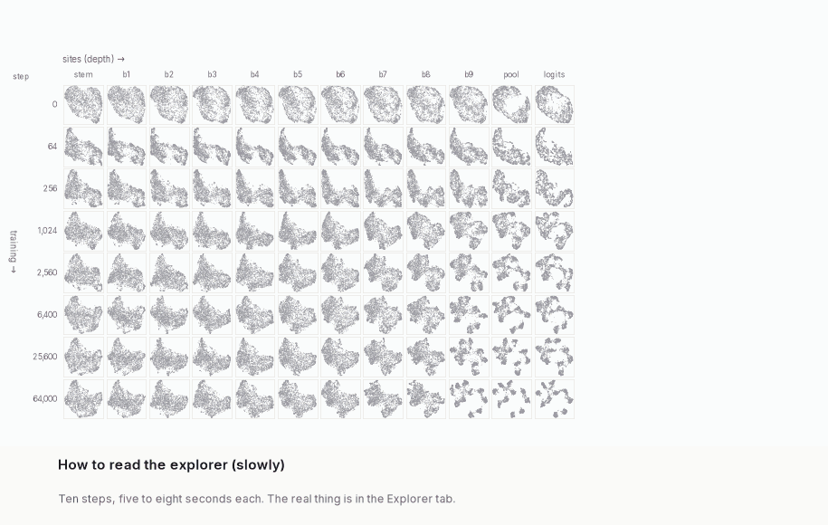
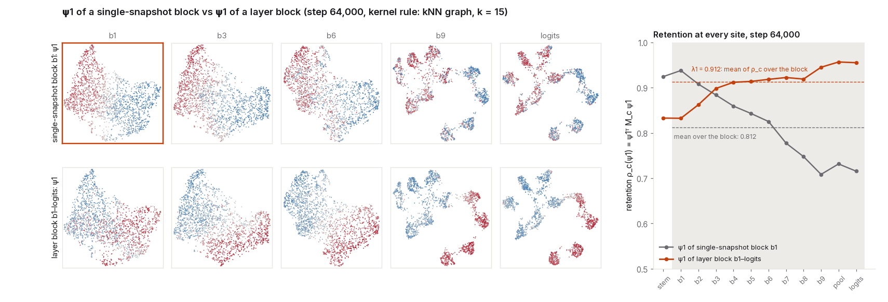
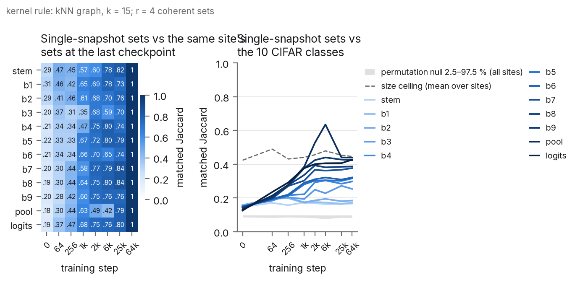
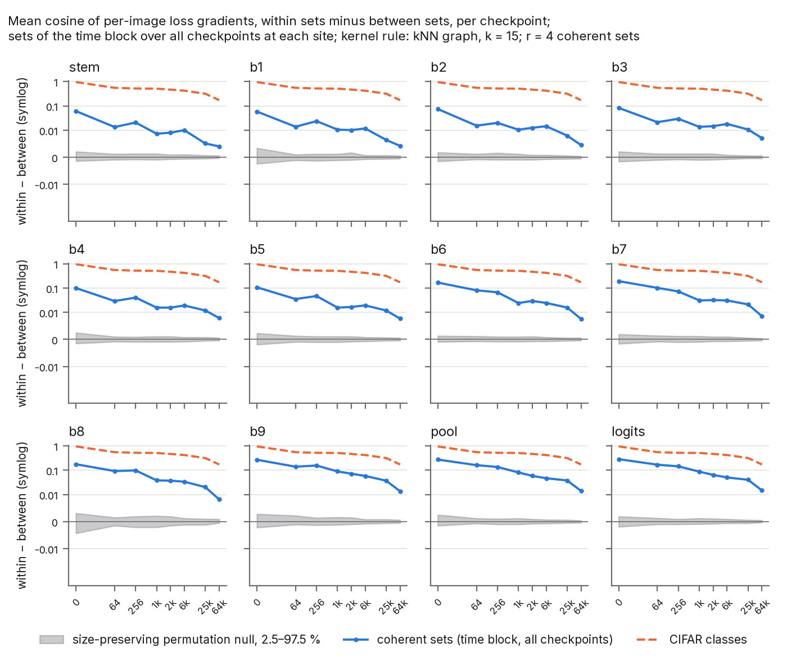
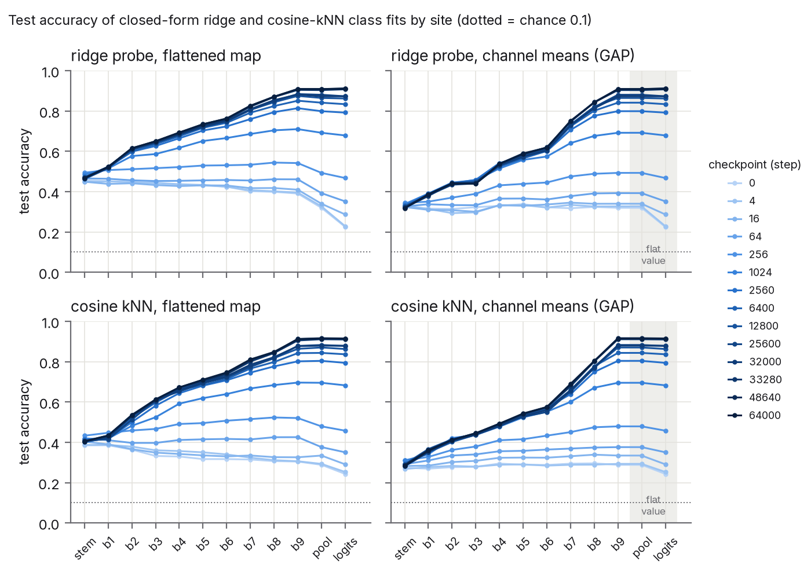
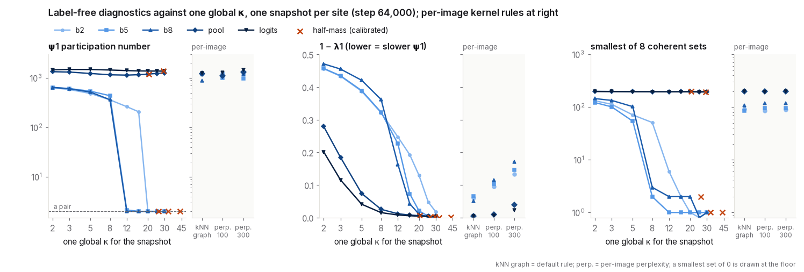
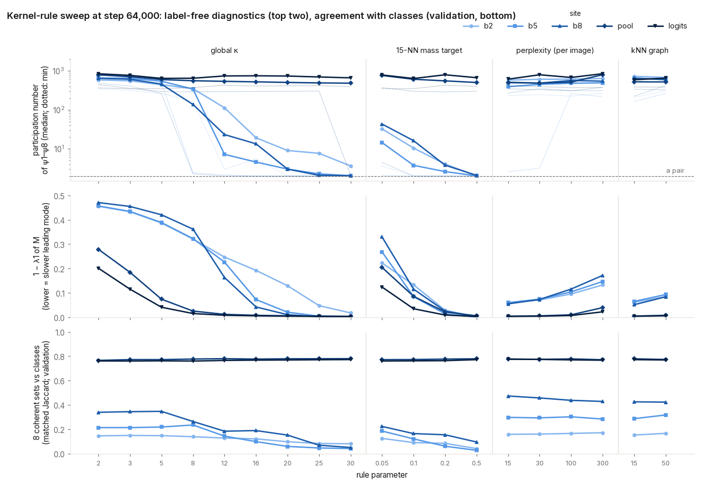
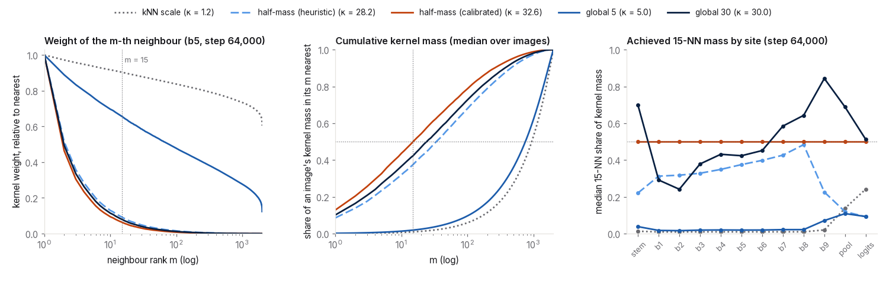
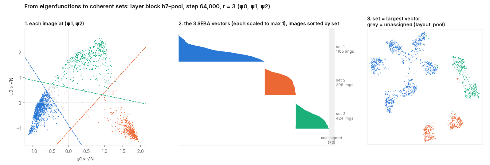
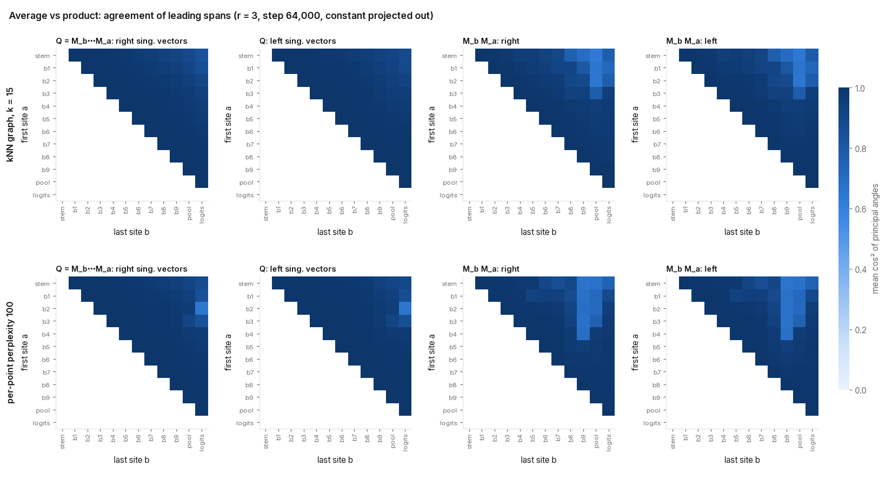

Which inputs does a network treat the same, at which layer, and since when in training? I put that
question to a ResNet-20, using 2,000 CIFAR-10 test images at 8 checkpoints of its
training and recording its activations at 12 sites, from the first convolution to the logits. The answer
comes from a label-free spectral construction I call Neural Coherent Sets. On this network, the last layers
sort the images into four groups that line up with unions of classes; site b9 already splits vehicle-like from
animal-like images by step 64; and the grouping changes most between b2 and b3. Below, in
order: where the question comes from, how the construction answers it, what it might be used for, and an
explorer in which to check every statement.
Plotted: site b9 at each of the 8 checkpoints (UMAP layouts, one dot per
probe image). Colour: the image's coherent set from the time block b9, steps 2,560 to 64,000 (outlined
panels), kNN graph, k = 15, $r = 4$; grey: unassigned.
Values $\lambda_1, \lambda_2, \lambda_3$ =
0.977, 0.952,
0.937; gap $\lambda_3 - \lambda_4$ =
0.005; retention of the four SEBA vectors
0.92 to 0.97
inside the block and 0.62 to
0.66 at step 0; sets of
760, 380,
392 and 318 images,
150 unassigned. (Terms are defined below.)
In short, this is a continuation of work on activation cells, carried on with completely different
tools. Its core intuition is to find what the network treats the same, and to find it at a cost that grows with the
amount of data rather than with the size of the network, at a resolution the method makes explicit. It also connects
the question to established work on inferring programs and dynamical systems, and on what neurons compute.
1. Activation cells suggest a discrete code
Stefan Heimersheim and collaborators observed what they call activation
cells. Take three real activations at some layer, interpolate between them, and run the rest of the network: its
response does not blend smoothly but jumps sharply, as if the layer's activation space were tiled into Voronoi-like
cells. If the rest of the network computes nearly the same thing everywhere in a cell, then at that layer the
network behaves like a machine with discrete states, and which cell an input lands in carries most of what
the rest of the network uses. A discrete code like that could in principle be decompiled, by reading off the states
and the transitions between them the way one reads a finite automaton. I spent a long time trying to do this for
language models.
2. Cells are too expensive to find directly
Finding a cell means finding its boundary, and a boundary is where the downstream computation changes. Measuring
that directly means measuring Jacobians of the rest of the network, or running interpolations, in many directions
around every data point, at every layer. In the dimensions and at the data sizes where the question matters, that
does not scale. The data also only sample the space, so most of any boundary is never seen.
3. A cell is a group of inputs the network treats the same
The question can be asked about groups of inputs instead of boundaries: which inputs does the rest of the
network treat as interchangeable? My collaborator Brianna Grado-White and I take as a working hypothesis that
inside a cell the network does a limited form of harmonic label propagation: the downstream output at an
input is close to the average over its nearby inputs in the same cell, and changes only across boundaries. If
that holds, links between neighbours inside a cell connect inputs with the same downstream output, and the output
changes only along links that cross a boundary. A cell is then a group of inputs that few neighbourhood links leave. Finding groups like that is
exactly what spectral clustering does, from one similarity matrix per layer and with no Jacobians. The network
enters only through one forward pass per probe input and checkpoint; after that, the eigenproblems grow with the number of probe
inputs, not with the size of the network. Two explicit choices set the scale of the grouping: the neighbourhood
size, and the number of groups, chosen with the help of gaps in the eigenvalue spectrum. A first
labelled test of the hypothesis has been designed but not yet run; until it has, this is motivation, not a result.
4. Groups that persist are coherent sets
A layer is one snapshot. A cell that matters should persist across neighbouring layers or across training, and
a group of inputs that stays together under an evolving dynamics is what dynamical systems call a coherent
set (Froyland and collaborators). The construction therefore averages the neighbourhood walks over a run of
layers or checkpoints, with depth or training time in the role of time, and reads the sets off with SEBA, their
tool for turning eigenvectors into sets. I call the result Neural Coherent Sets.
5. The same question in program inference, dynamics and neuroscience
"Which inputs does the rest of the computation treat the same?" also underlies three established bodies of work,
and they share a spectral core.
Program inference. Weighted automata are reconstructed from Hankel matrices, which pair every prefix of an
input with every continuation. For languages, prefixes that every continuation treats alike form one state of the
minimal automaton (the Myhill–Nerode theorem); for weighted automata, a low-rank factorization of the Hankel matrix
plays that role and recovers the program up to a change of basis. Reading a layer as the end of a prefix and
the rest of the network as its continuation turns cells into states, and the spectral clustering here into a loose
cousin of that factorization. The longer-term ambition is reconstructing richer programs this way.
Dynamical systems. Hankel matrices of time series pair windows of the past with windows of the future,
and Koopman (transfer) operators carry functions of the present state forward in time. The leading singular vectors
of either give a small state, or coherent sets, through which the past shapes the future.
Neuroscience. Pughe-Sanford et al. (2025) propose that sensory neurons learn membership of the coherent
sets of their inputs' dynamics, so that coherent sets are a natural lens on what neurons compute.
Hankel reconstruction, spectral clustering and coherent sets are close relatives, and each gives a principled
reading of "treated the same". The analogies are loose, and the dropdown below says where each one stops. One
concrete difference: a block here averages the walks of its layers rather than forming a Hankel-like product
(the two agree closely).
The precise statements, and where each analogy stops
The hypothesis, stated precisely. Call a cell a region of a layer's activation space where the rest of
the network computes nearly the same thing. If most neighbourhood edges of the walk $P$ stay inside cells, any
downstream function $F$ that is nearly constant within cells satisfies $F \approx P F$ (harmonic, as in label propagation; Zhu, Ghahramani and Lafferty
2003) except at images with edges across a boundary, so its penalty $\tfrac12 \sum_{ij} P_{ij} \lVert F_i - F_j
\rVert^2$ comes only from boundary-crossing edges. Cells are then low-cut sets, and the slowest eigenvectors
approximately span their indicators; persistence across a block makes them coherent sets. This is a motivating
hypothesis, not a result.
Hankel matrices. For a function $f$ on strings, $H_f[u, v] = f(uv)$, with prefixes $u$ as rows and
suffixes $v$ as columns. Over the reals, $f$ is computed by a weighted finite automaton exactly when $H_f$ has finite
rank, and $\operatorname{rank} H_f$ is the smallest linear state dimension of such an automaton. Reconstruction
factors a rank-complete prefix–suffix block of $H_f$, together with its symbol-shifted blocks and boundary vectors,
and yields a minimal realization up to a change of basis, not privileged hidden states (Balle et al. 2014). For a
language, the distinct rows of its 0/1 Hankel matrix are the states of its minimal deterministic automaton
(Myhill–Nerode). Hankel rank does not in general give the minimal number of hidden states of an HMM (positivity
constraints apply); related spectral methods, under rank and nondegeneracy assumptions, learn observable
representations of hidden Markov models (Hsu, Kakade and Zhang 2012).
The analogy. Read layer $a$ as the end of a prefix and layers $a$ to $b$ as its continuation. In the
product $Q = M_b \cdots M_a$, image $j$'s column is where its layer-$a$ neighbourhood spreads as it diffuses through
the later layers' neighbourhoods; images with similar columns are treated alike downstream, and $Q$'s leading
singular vectors play the part of a small state. This is an analogy only: they inherit none of the Hankel
reconstruction guarantees, the network is not an automaton, there is one fixed continuation rather than all
suffixes, the walks measure neighbourhoods rather than outputs, and no rank here counts states.
The variational meaning. For one walk $P$ and the indicator of a set $A$, the penalty
$\tfrac12 \sum_{ij} P_{ij} (f_i - f_j)^2$ equals $\operatorname{cut}(A, \bar A) = \sum_{i \in A,\, j \notin A}
P_{ij}$, the total transition weight crossing between $A$ and its complement. Sinkhorn makes every image's degree 1,
so normalised cut equals ratio cut. Relaxing the balanced two-valued indicator to a real function gives
$\min_{f \perp \mathbf 1,\, \lVert f \rVert = 1} f^\top (I - P) f$, solved by the leading non-constant eigenvector of
$P$ (equivalently of $M$) (von Luxburg 2007). The penalty is linear in the walk, so for a block the cut is averaged
over its snapshots. The multiway relaxation takes orthonormal columns $\psi_1, \dots, \psi_{r-1}$; SEBA turns that
relaxed span into candidate hard sets and does not solve the discrete multiway cut exactly.
Pughe-Sanford et al. They propose that sensory neurons learn membership of finite-time coherent sets of
their input's dynamics. A balanced coherent pair is a present region and a future region that trajectories move
between with high probability over a horizon $\tau$; relaxing the indicators gives singular-function pairs of the
stochastic Koopman operator, and a neuron computes one of them, thresholded or rectified. For stable
Ornstein–Uhlenbeck dynamics the leading non-constant singular-function pair is linear (higher ones are polynomial),
and the linear-feature Galerkin estimator on lag vectors reduces to past–future canonical correlation. Their operator
is the stochastic Koopman operator of real input dynamics, not an average of constructed smoothers, and they model
biological sensory computation without claiming that trained artificial units do this.
What is unusual about this approach
Label-free. Nothing semantic defines the kernel or the basis; labels balance the probe, and after that they only colour and check.
Each layer in its own geometry. The construction fits no map between layers or checkpoints (the 2-d
layouts are aligned for display only).
Depth and training time are one object. A block is a run of snapshots along either axis.
Groups of images, not directions. The sparsity is over images; nothing assumes sparse activations.
Nothing trained on top. Only fixed computations and eigenproblems.
Architecture-agnostic. It needs only activations on a fixed probe set.
The procedure in five steps
Five fixed computations, from activations to sets. Pictures from one example (layer block b7 to pool, step
64,000); exact versions in Method.
For one snapshot (one site at one checkpoint), centre the activations over the probe images, scale each image's
vector to unit length, and take the cosine between every pair of images.
The maths
With $h_i$ the activation of image $i$ in snapshot $c$ and $\bar h$ its mean over the probe,
$$ \hat h_i = \frac{h_i - \bar h}{\lVert h_i - \bar h \rVert}, \qquad C_{ij} = \langle \hat h_i, \hat h_j \rangle,
\qquad d_{ij} = 1 - C_{ij}. $$
The dot product on each snapshot is the only geometric assumption. Cosine drops the activation norm.
A kernel rule turns the cosines into neighbourhood weights $K_c$
(default: the kNN graph, k = 15), and Sinkhorn scaling makes them a symmetric random walk $P_c$ between similar
images. Symmetric scaling gives every image the same stationary weight, so differences between snapshots' stationary
measures do not enter the block comparison. The lazy walk $M_c = \tfrac12(I + P_c)$ stays put half the time.
The maths
Sinkhorn finds $v > 0$ with $P_c = \mathrm{diag}(v)\, K_c\, \mathrm{diag}(v)$ having every row and column sum
equal to 1. For a function $f$ on the images (entry $f_i$ for image $i$), the walk defines a penalty
$$ f^\top (I - P_c)\, f \;=\; \tfrac12 \sum_{i,j} (P_c)_{ij}\,(f_i - f_j)^2 , $$
which is small when $f$ is nearly constant on images the snapshot treats as neighbours. $M_c$ has the eigenvectors of
$P_c$, with eigenvalues $\tfrac12(1 + \lambda) \in [0, 1]$. The kernel rule mattered more than anything else here;
choosing the kernel explains why the default adapts to each image.
A block is a run of snapshots: consecutive sites at one checkpoint (a layer block) or consecutive
checkpoints at one site (a time block). Its operator $\bar M$ is the plain average of the snapshots' lazy walks.
The maths
$\bar M = \frac{1}{|B|} \sum_{c \in B} M_c = \tfrac12(I + \bar P)$, with $\bar P$ the mean walk. The penalty is
linear in the walk, so
$$ f^\top (I - \bar P)\, f \;=\; \frac{1}{|B|} \sum_{c \in B} f^\top (I - P_c)\, f . $$
This is Froyland's dynamic Laplacian, and Banisch and Koltai's space-time diffusion maps, with depth or training
in place of time. The product $M_b \cdots M_a$ is the theory's natural object; the average is what I use, and the
two agree closely here (average versus product). Checkpoints count equally, and they
are roughly geometric in steps.
4. Take its eigenfunctions, with their retention in every snapshot
The leading eigenvectors $\psi_1, \psi_2, \dots$ of $\bar M$ are the functions on the images with the smallest
average variation across the block's walks. An average is not "in every snapshot": a function can rank high
while varying a lot in one snapshot. So I always show, next to each eigenfunction, its retention
$\rho_c(\psi_k)$ in each snapshot, which marks the snapshots where that candidate distinction is weaker. Retention 1 means
the function is constant on every neighbourhood of the snapshot; a random function gets about
0.5. Retention near 1 means a step of the walk changes the function's value little relative to its overall size;
lower retention means larger changes.
The maths
Among unit functions orthogonal to the constant $\psi_0$ and to each other, the eigenvectors of $\bar M$ in
decreasing order of eigenvalue minimise the block-average penalty (2). Retention
in any snapshot $c$, inside or outside the block, is
$$ \rho_c(f) = \frac{f^\top M_c f}{f^\top f} \in [0, 1], \qquad \lambda_k = \frac{1}{|B|} \sum_{c \in B}
\rho_c(\psi_k). $$
An individual $\psi_k$ is meaningful only when $\lambda_k$ is separated from its neighbours; otherwise only the
span is.
$r$ is the number of groups you ask for. SEBA takes the constant $\psi_0$ and the leading $r - 1$ non-constant
eigenfunctions, and returns $r$ sparse vectors that approximate their span. When the retained eigenvalues are near 1, functions in
that span vary little on average across the block's walks; a sparse one is large on some images and zero on the rest, which is what a group looks like. Giving each image to the vector that is largest there yields $r$
candidate coherent sets; images where all $r$ vectors are zero are unassigned.
The maths
SEBA (Froyland, Rock and Sakellariou 2019) alternates two moves on $V = [\psi_0, \dots, \psi_{r-1}]$: rotate
inside the span, $Z = VR$, then soft-threshold each column of $Z$ at $\mu = 0.99/\sqrt N$ and renormalise, giving
$S$; the next rotation $R$ is the orthogonal polar factor of $V^\top S$. The thresholded $S$ generally leaves the
span, so the SEBA vectors are sparse approximations to it, not elements of it. Each column is then sign-fixed, scaled
to a maximum of 1, ordered by decreasing minimum entry ("reliability", which numbers the sets) and clipped at 0.
Image $i$ goes to $\arg\max_j S_{ij}$ if that maximum is positive, and is unassigned otherwise. How sharply $r$ cuts
the spectrum is the gap $\lambda_{r-1} - \lambda_r$. Details in Method.
The sets at the end of training. Plotted: the 21 images with the largest SEBA value in set 2 of
layer block b7 to pool, step 64,000, $r = 4$. Finding 1 · explorerLate sets, painted back through training. Plotted: site b9 at steps 0, 64, 1,024 and
64,000, coloured by the fixed $r = 2$ sets of the time block b9, steps 2,560 to 64,000.
Finding 2 instead recomputes b9's own sets at each checkpoint. Finding 2 · explorer
Agreement between sites. Plotted: matched Jaccard between the $r = 4$ sets of single-snapshot
blocks, site against site (left: step 64,000; right: adjacent sites at every checkpoint). Finding 3 · explorer
Where this could go
These are sketches. None of them has been run.
Where good and bad runs part ways. Record a model's activations on trajectories that went well and ones
that went badly (an agent's successful and failed episodes, say). Find the layer, or the point in the trajectory,
at which the two stop falling into the same coherent sets. That would point to where the network first treats them
differently, without anyone having to say in advance what the difference is.
How behaviour-relevant data move through training. Hold fixed a probe of, for example, aligned and
misaligned examples, and follow it across checkpoints. Time blocks show whether the two move together or split
apart, and when. Each set's trajectory can then be compared with whatever else is measured over training (loss,
gradients, scores on behavioural assays), and the eigenfunctions can be broken down into their loadings on those
assays.
From activation space back to weight space. An eigenfunction $\psi$ of a block is a function on the probe
inputs, so it can be paired with anything else defined on them. For a weight matrix $W$ that reads inputs $U$ and
receives backpropagated errors $\Delta$ (one row per probe input), the loss gradient on the probe is exactly
$\nabla_W \mathcal L = \Delta^\top U = \sum_k (\Delta^\top \psi_k)(U^\top \psi_k)^\top$ for any complete orthonormal
basis $\psi_k$ of functions on the probe. Taking the block's leading eigenfunctions as the first members of that basis
splits the training signal on $W$ into one piece per mode: $U^\top \psi_k$ is the input direction the mode reads, and
$\Delta^\top \psi_k$ is the output direction the training signal pushes along it. For a convolution, these terms are
summed over positions. That would give a candidate account of which weights carry each coherent set and how training reshapes them, using
only the network's own loss, with nothing fitted on top. It is THEORY.md's mode decomposition of the
gradient (section 7.2), applied to these eigenfunctions.
Block
to
side panel
Layout
The kernel rule decides which probe images count as neighbours in each snapshot before the walk $P_c$ is built. With cosine similarity $C$ and distance $d = 1 - C$, a temperature rule uses $K_{ij} = e^{-\kappa d_{ij}}$; $\kappa$ is the inverse temperature. The answer depends on the rule, so it is exposed here rather than hidden.
kNN graph, k = 15 (default): link $i$ and $j$ if either is among the other's 15 nearest neighbours. Rank-based, no $\kappa$; the same neighbourhood size as the UMAP layouts.
per-point perplexity 100 / 300: each image gets its own $\kappa_i$ so that its neighbour distribution has perplexity 100 (or 300, coarser); the t-SNE affinity. Expect results close to the kNN graph.
kNN scale (flat reference): one $\kappa = 1/d_{15}$ per snapshot, about 1.2 in the trained middle layers. A nearly flat kernel: spread, PCA-like modes with weak eigenvalues.
half-mass, calibrated (cautionary): one $\kappa$ per snapshot chosen so the 15 nearest neighbours carry half the kernel mass; $\kappa$ 26 to 43 in the middle layers. Leading modes sit on near-duplicate pairs of images (watch the PN row under the spectrum).
In the trained middle layers the cosine geometry is nearly equidistant, so one temperature per snapshot is either too flat or too sharp; the last two rules fail in those opposite ways and are kept so you can see it. The side panel gives $\kappa$ and the median 15-NN kernel mass over the block's snapshots. More in Method.
Tour
How to use the explorer

The grid. Rows are checkpoints (training step and validation accuracy), columns are sites, from the stem to the logits. Each panel shows the same probe images at one snapshot (a checkpoint and a site), placed by a 2-d UMAP of that snapshot's activations. Positions are for display only; no number on this page is computed from them.
The block (outlined) is a run of snapshots along one row (a layer block) or one column (a time block); one snapshot alone is a single-snapshot block. Its block operator $\bar M$ averages the lazy walks $M_c$ of its snapshots. The colouring comes from that block only and is painted on every panel, so you can follow the same images to other layers and checkpoints.
The side panel describes the selection: the spectrum of $\bar M$, representative images, retention $\rho_c$ in every snapshot of the row or column, the panel under the pointer enlarged, and per-snapshot numbers.
Extras.Layout: seed 1 places the points by a second network's UMAP while colours still come from the first. The per-image diagnostics (loss, input-Jacobian norm, gradient alignment) and CIFAR class only colour; none enters the kernel or the sets. Definitions: glossary.
Pick a block.Click a panel to end the block there; shift-click or drag along the row (or column) to set its start.Tap a panel to set the block's
Hover a point.The same image is ringed in every panel.Tap a point: the same image is ringed in every panel.
Read the panel. Spectrum, sets and their images, retention.
Findings
These are readings of one network (ResNet-20, CIFAR-10, one seed) made with the
procedure in the Overview. They are also worked examples of how to think with
the tool. Each finding opens with a claim and a tag: observed is a direct reading of a measured quantity,
reading is an interpretation I would defend, and speculation is a guess worth checking. Then come the
evidence, with captions that only say what is plotted; how I read it, and what else it could be; and what to change
in the explorer to test it yourself. Class names appear here, in the prose, to describe sets that the method found
without them.
1. Four sets at the end of training, and what is in them
What we are looking at
The coherent sets ($r = 4$) of the layer block b7 to pool (four snapshots) at the last checkpoint, step 64,000, kernel rule kNN graph, k = 15.
The explorer at this view (screenshot; click to open it live). The outlined panels are the block the
colours come from; the side panel lists its sets or eigenfunction ends with their images.
Claim(observed). At the last checkpoint, the layer block b7 to pool splits the probe into four
coherent sets of 726, 396,
424 and 316 images, with
138 unassigned, and every set's SEBA vector keeps a retention between
0.87 and 0.98 in each of the
block's four snapshots. Here they are, from the top of each set.
Plotted: set 1 of layer block b7 to pool, step 64,000, kNN graph, k = 15,
$r = 4$: the 22 members with the largest SEBA value. Values: 726
images; retention 0.88 to
0.96.Plotted: set 2, same block and settings. Values:
396 images; retention 0.91 to
0.98.
Plotted: set 3, same block and settings. Values:
424 images; retention 0.89 to
0.96.Plotted: set 4, same block and settings. Values:
316 images; retention 0.87 to
0.95.
What is in them(reading). Counting classes (200 images each), set 1 holds
frog 197, cat 172, dog 155, bird 154; set 2, automobile 200, truck 190, cat 2, ship 2; set 3,
ship 196, airplane 192, bird 15, deer 7; set 4, horse 194, deer 84, dog 29, bird 6. So at the
end of training the late layers group the ten classes into four unions: small animals, road vehicles, the vehicles of
sky and water, and horses with the largest share of the deer. Every class but deer has most of its images in a single set. The matched Jaccard of the sets
against the ten classes is 0.46, against
0.47 for the best that four sets of these sizes could do: it nearly reaches the
size ceiling of the matched Jaccard. The class counts below are the stronger evidence. That is the network's own coarse ontology at this depth, found without labels, and
it is a plausible one; a person sorting these pictures into four piles might well do the same.
Plotted: the number of probe images in each SEBA set (rows, reliability order, then unassigned)
of each CIFAR class (columns), for layer block b7 to pool, step 64,000, kNN graph, k = 15,
$r = 4$. Colour from 0 to 200, the images per class.What else it could be
Four is my choice. The gaps where $r = 2, 3, 4$ cut the spectrum are
0.031, 0.011 and
0.023; none dominates. At $r = 3$, horse and deer join the small animals
(that set's largest classes: horse 198, dog 196, frog 188, deer 185), so set 4 is the least canonical of
the four.
The readout seen from below. The block includes pool, which is one linear map away from the logits, so the
sets could be the classifier's geometry propagated back. Against this, the sets agree more with b9's own late-training
sets (time block steps 2,560 to 64,000: matched Jaccard 0.90)
than with b9 alone, its single-snapshot block (0.76).
The kernel rule. The same block under perplexity 100, perplexity 300 and kNN scale gives sets matching
these at 0.91, 0.82 and
0.76; half-mass, the rule that fails in the middle layers
(Method), gives 0.18.
Try it. Open this block in the explorer.
Switch the colouring to class to see the make-up on the layouts; set $r$ to 3, then 6, and watch which sets merge or
split; move the block's start from b7 down to b4.
2. Looking back: when the two-set split becomes vehicles against animals
What we are looking at
The two coherent sets ($r = 2$) of the single-snapshot block at site b9, recomputed at each checkpoint in turn. The screenshot shows step 64; change the checkpoint in the explorer to see the others.
The explorer at this view (screenshot; click to open it live). The outlined panels are the block the
colours come from; the side panel lists its sets or eigenfunction ends with their images.
Now fix one site, b9, and ask what its own two-set split (the single-snapshot block, $r = 2$) looks like at each
checkpoint. I score it against the class grouping {airplane, automobile, ship, truck} versus the other six, with the
matched Jaccard, its permutation null, and the ceiling that the set sizes allow
(Measurements).
Claim(observed). By step 64, when validation accuracy is 0.31, b9's
two-set split is already the best match to vehicles against animals among all 511 ways of splitting the ten classes
in two, and it has half of the alignment its sizes allow. By step 1,024 it has 80% of its final excess over the null
and keeps it, ending at 0.89 against a ceiling of 0.91. Over the
same stretch, airplanes leave the vehicle set.
Plotted: the number of probe images in each SEBA set (rows: sets 1 and 2 in reliability order,
then unassigned) of each CIFAR class (columns), for the single-snapshot block b9, kNN graph, k = 15, $r = 2$; the
slider selects the checkpoint. Colour from 0 to 200, the images per class.
Step through the slider:
Step 0. The split beats its null (score 0.40 against a null maximum of
0.32), but vehicles against animals ranks only 10 of 511, and
a split of the same sizes by a single pixel statistic does better (0.46, by mean blue).
In this probe, vehicles are 0.78 standard deviations bluer than animals, and a
linear fit on twelve pixel statistics explains $R^2$ = 0.76 of b9's $\psi_1$ at step
0. Beating the null
happens at step 0 at every site, so it cannot date anything; I use the effect size instead.
Step 64. Vehicles against animals is the best-matching class split (rank
1); normalised excess 0.63, and it stays above one half
from here on; 0.85 of the airplanes are in the vehicle set.
Step 1,024. Score 0.85, with agreement 0.96 on the
assigned images. Airplanes in the vehicle set: 0.69.
Later. Airplanes in the vehicle set fall to 0.27 at step
6,400 and 0.34 at the end, with
0.64 unassigned, while every other class has at least
0.91 of its images in its own side's set.
Plotted: for each site (one line, light for the stem to dark for the logits) and checkpoint
($x$, symlog in steps), the normalised excess $(s - \mu_0)/(s_{\max} - \mu_0)$, where $s$ is the matched Jaccard
between the $r = 2$ sets of that single-snapshot block and the grouping {airplane, automobile, ship, truck} against the
other six classes, $\mu_0$ its mean over 200 permutations of the set labels, and $s_{\max}$ the largest value two
sets of these sizes can reach. kNN graph, k = 15. 0 is the null mean; 1 is as aligned as the sizes
allow.
Across depth(observed). b7 to logits pass one half at step 64 and stay
there, b6 at step 1,024, b3 to b5 at step 2,560, and the stem, b1 and b2
never do. Yet at the end, vehicles against animals is the best-matching class split even at the stem (rank
1; score 0.53, agreement 0.77 on
the assigned images).
How I read it(reading). The deep layers draw a vehicle-like split from step 64, well before the
network is any good at the task, and it is mostly in place by step 1,024. The early layers lean the same way but stay
weak. The precise end-of-training split at b9 is animals against automobile, truck and ship, with airplanes left in
between. My guess (speculation): airplanes start out grouped with the other vehicles by colour (sky and water
are blue), and as the network learns what an airplane is, it stops treating airplanes like cars, while still pairing
them with ships when given four sets (finding 1).
What else it could be
Colour or background carries the early split. The single-statistic baseline beats b9's split at step 0
(0.46 against 0.40) but not from step
64 on (0.45 against 0.64
at step 64; it reaches 0.49 at the end, against
0.89).
Matched Jaccard depends on set sizes and on the unassigned count. That is why I read the normalised excess
and the agreement on assigned images alongside it.
Eight checkpoints are coarse. They cannot place an onset inside steps 0 to 64 or 256 to 1,024; 73
checkpoints were saved. The perplexity-100 rule gives the same milestones at b9.
Airplanes may be unassigned because they sit between the two sets rather than because they are pushed out
of one; the SEBA values of airplane images would tell.
The coherent sets ($r = 4$) of the single-snapshot block at each site, compared between sites at the same checkpoint. The screenshot shows site b2 alone at step 64,000, its sets painted on every site.
The explorer at this view (screenshot; click to open it live). The outlined panels are the block the
colours come from; the side panel lists its sets or eigenfunction ends with their images.
Claim(observed). At the last checkpoint, the $r = 4$ sets of single-snapshot blocks at adjacent sites
agree with matched Jaccard 0.43 to 0.88 (the
permutation null for adjacent pairs at this checkpoint is at most 0.15). The grouping changes most at
b2→b3 (0.43), then stem to b1
(0.57), b6 to b7 (0.61) and b8 to b9
(0.64), and least at b9→pool. But training does not
create this agreement: the mean over adjacent pairs is 0.76 at step 0 and
0.71 at the end.
Plotted: matched Jaccard between the hard sets of the single-snapshot blocks at the row site and the
column site, kNN graph, k = 15, $r = 4$, unassigned images in no set; the slider selects the checkpoint.
Values (step 64,000): stem against logits 0.24, b9 against
logits 0.87; permutation null for adjacent pairs at step 64,000 at
most 0.15.
How I read it(reading). At step 0 the leading eigenfunctions share a strong image-statistics
component, with luminance prominent. A linear fit on twelve pixel statistics explains $R^2$ =
0.81 of $\psi_1$ at the stem and 0.76 at b9; luminance alone
gives a squared correlation of 0.72 at the stem and
0.37 at pool; and the stem's step-0 $\psi_1$ has |cos|
0.716 with b9's, 0.581 with pool's and
0.639 with the logits'. So at step 0 neighbouring sites agree largely because
the untrained network carries the same image statistics through. Training changes what is carried and where it
is redrawn. By the end the stem and the logits share little, b9 and the logits share nearly everything, and the
largest breaks cut the network into five stretches: stem; b1 and b2; b3 to b6; b7 and b8; b9 to logits.
What else it could be
Residual shortcuts copy their input, so some adjacent agreement is architecture, not learning. The stage
boundaries, where the shortcut subsamples with stride 2 and zero-pads the new channels, are sharper tests: b6 to b7 is a low point, b3 to b4
(0.68) is not. The lowest point, b2 to b3, lies inside the first stage, and I have no
account of it yet.
The stretches depend on where I cut. The five above come from the four lowest adjacent values; "where the
grouping changes most" is the robust statement.
The leading eigenfunction $\psi_1$ (not the sets) of the layer block b1 to logits at step 64,000, compared with $\psi_1$ of the single-snapshot block at b1.
The explorer at this view (screenshot; click to open it live). The outlined panels are the block the
colours come from; the side panel lists its sets or eigenfunction ends with their images.
Claim(observed). At the end of training, the leading eigenfunction of the layer block b1 to
logits is not b1's own (|cos| 0.70 between the two $\psi_1$); it is
closest to the single-snapshot $\psi_1$ of b6 (|cos|
0.96). Averaging trades retention at b1 for retention
in the later layers.

Plotted: step 64,000, kNN graph, k = 15. Top row: $\psi_1$ of the single-snapshot
block b1; bottom row: $\psi_1$ of the layer block b1 to logits; each painted on the UMAP layouts of b1, b3, b6, b9
and logits (red positive, blue negative, scaled by $\max_i |\psi_1(i)|$). Right: retention $\rho_c(\psi_1)$ of each
at every site, block shaded; dashed lines are the means over the block. Values: single-snapshot $\psi_1$:
0.94 at b1, 0.71 at b9,
mean 0.81; block $\psi_1$: $\lambda_1$ =
0.91, retention 0.83 at
b1 and 0.96 at pool.
How I read it(reading). Half of this holds by construction. The block's $\psi_1$ maximises mean
retention over the block and b1's own $\psi_1$ maximises retention at b1, so the block's must retain less at b1; it
does at 11 of 11 start sites. The
informative half is which split the average picks: not a compromise blurred across the layers, but the split
that b6 draws on its own and that b6 to pool keep. A split that only early layers draw loses. That is what a block is
for: asked "what does the network treat alike from b1 to the logits?", the average answers with b6's split. The
agreement with the start site's own $\psi_1$ rises as the block starts later (b5:
0.82, b7: 0.97; median
0.82).
What else it could be
$\psi_1$ may not be canonical. If $\lambda_1$ and $\lambda_2$ are close, the single direction is arbitrary
within their span. The leading three-dimensional spans also differ (mean $\cos^2$
0.30), so this is not only a rotation within a span.
Average against product. The theory's object is the product of the walks, which weights snapshots differently;
the comparison is in Method.
The coherent sets ($r = 2$ and $r = 4$) of the time block at site b9 over all 8 checkpoints, set against per-image loss gradients at each checkpoint. The screenshot shows $r = 4$.
The explorer at this view (screenshot; click to open it live). The outlined panels are the block the
colours come from; the side panel lists its sets or eigenfunction ends with their images.
Claim(observed). On the images the sets assign, the within-minus-between gradient cosine of b9's
label-free sets at the last checkpoint is 1.17 times that of
the matching class-union grouping with two sets, and 0.46
times with four (0.64 for the late-training block).
Plotted: at each checkpoint ($x$, symlog in steps), the mean cosine between per-image
cross-entropy loss gradients (all parameters) for pairs of images in the same group, minus the mean for pairs in
different groups. Groups: the $r = 4$ coherent sets of the time block b9, all 8 checkpoints,
kNN graph, k = 15; the ten CIFAR classes; and 100 size-preserving random relabellings of the sets (band, 2.5 to
97.5 percentiles).
Against the ten classes the sets score low: their within-minus-between cosine goes from
0.270 at step 0 to 0.014 at the end, against
0.953 to 0.172 for the classes; at the last checkpoint
the sets reach at most 0.09 of the classes' value at any site. But the
classes are the wrong yardstick for a grouping that merges classes. In logit space the negative cross-entropy
gradient of image $i$ is $e_{y_i} - p_i$, so two images of different classes push their own logits in opposite
directions however alike they are otherwise. That is the reason to compare the sets with the class-union
grouping, which gives each class wholly to the set holding most of it and so merges the same classes. The plotted
gradients are with respect to all parameters, $g_i = J_\theta z_i^\top (p_i - e_{y_i})$, so the logit-space fact
motivates the reference; the measurement below does the rest.
time block b9
class union
sets
sets / union
sets / union, late block
$r = 2$
0.006
0.007
1.17
1.17
$r = 4$
0.030
0.014
0.46
0.64
Plotted: within-minus-between cosine of per-image loss gradients at step 64,000,
computed on the images the sets assign (1,795 at $r = 2$,
1,867 at $r = 4$), for the coherent sets of the time block b9 over all checkpoints
(kNN graph, k = 15) and for their class-union groupings on the same images ($r = 2$:
bird, cat, deer, dog, frog, horse | airplane, automobile, ship, truck; $r = 4$: airplane, ship | dog, horse | automobile, truck | bird, cat, deer, frog). Last column:
the ratio for the time block b9, steps 2,560 to 64,000.
How I read it(reading). Measured on the same images against the grouping that merges the same
classes, the sets are about as gradient-coherent as that grouping with two sets, and about half as coherent with
four. The low ratio to the ten classes mostly reflects that the sets merge classes. What the network treats alike in
its activations, it also, to a good extent, trains alike.
What else it could be
One site. The class-union reference is computed at b9 only so far.
The loss itself. Any label-based loss builds the label into the gradient. Gradients of a label-free loss
on the same images would show how much of this coherence remains without the label term.
Try it. Open b9's sets over all of
training and switch the colouring to the gradient cosine with the mean gradient, checkpoint by checkpoint.
Readings from the images themselves (coming)
The findings above read sets through their class make-up. Some of the more interesting readings come from looking
at the images: whether a set follows colour, background, texture or pose, within a class as well as across classes.
Those readings are coming, written up separately. The tools for them are the image grids above (any set or either end
of any $\psi_k$, in the explorer's representative-images panel), the image-statistics colourings in the
explorer, and the image-statistics charts in Measurements.
Checks I'd like to run
Longer-range directions (diverging trajectories, behaviour-relevant data over training, and the route from
eigenfunctions back to weights) are sketched in the Overview.
Split-half resampling of the probe, to see which sets survive.
A second seed's sets (only its layouts exist now), and other probes.
Denser checkpoints (73 were saved) to place the onsets in finding 2.
The product operator in place of the average, for findings 3 and 4.
The class-union gradient reference at every site, a within-class null, and a label-free loss.
Whether airplanes at b9 are unassigned because they sit between the two sets.
From the method side: a kernel on centred but unnormalised activations (which sets depend on dropping the norm), and a probe drawn without labels (removing the one label use before the sets exist).
Measurements
Systematic charts of the comparison statistics defined in
Method, computed on the 2,000 probe images at 8
checkpoints (steps 0, 64, 256, 1,024, 2,560, 6,400, 25,600, 64,000) and 12 sites. Captions state what is plotted; readings of these charts
are argued in Findings. CIFAR class labels, losses, gradients and probe pixels enter only as
comparisons; none of them enters a walk, a block operator or a SEBA rotation.
Defaults unless a caption says otherwise: kernel rule kNN graph, k = 15; single-snapshot blocks; $r = 4$ SEBA
sets, i.e. SEBA applied to $\psi_0..\psi_3$ of the block operator $\bar M$; hard sets by largest SEBA value, with
unassigned images in no set. "Final" is step 64,000.
Agreement with the final checkpoint's sets, and with the classes
What we are looking at
Each chart compares the $r = 4$ sets of one single-snapshot block (one site, one checkpoint) with the same site's sets at the final checkpoint, or with the classes. The screenshot shows one such block, site b9 at step 64,000; its sets are painted on every panel, so the rows above show where these images sat earlier.
The explorer at this view (screenshot; click to open it live). The outlined panels are the block the
colours come from; the side panel lists its sets or eigenfunction ends with their images.
Plotted: rows: sites; columns: checkpoints. Colour: matched Jaccard between the SEBA sets of the
single-snapshot block (checkpoint, site) and those of the single-snapshot block (final checkpoint, same site); the final
column is a self-comparison. Default kernel rule, $r = 4$. No null in this panel (see the next chart).
Values: step 0: 0.18 to 0.31.Plotted: the quantity of the heatmap above as lines: x: training step (symlog); one line per
site (ordinal colour, stem light to logits dark); band: permutation null of each site, 2.5 to 97.5 percentiles.
Default kernel rule, $r = 4$. Values: first checkpoint with matched Jaccard above 0.5 and above the null's
97.5th percentile: stem 1,024, b1 1,024, b2 1,024, b3 2,560, b4 2,560, b5 1,024, b6 1,024, b7 1,024, b8 1,024, b9 1,024, pool 1,024, logits 1,024 (pool: at every later checkpoint from 25,600);
step 0: 0.18 to 0.31; null 97.5th percentile
at most 0.16 before the last checkpoint.Plotted: x: training step (symlog); one line per site: matched Jaccard between the $r = 4$ SEBA
sets of the single-snapshot block (checkpoint, site) and the 10 CIFAR classes (4 matched pairs, so each set is matched
to one class); band: permutation null of each site, 2.5 to 97.5 percentiles; dashed grey: size ceiling against the
classes, averaged over sites at each checkpoint. Default kernel rule. Values: last checkpoint: stem
0.17, b5 0.32, b9 0.42, pool 0.44, logits 0.43; size ceilings
0.43 to 0.52; null 97.5th
percentile at most 0.10.Static version (PNG)

Static version of the charts above. The dashed size ceiling is the mean over sites; a single site's
score can exceed it at a checkpoint where that site's set sizes differ from the average.
Agreement between sites at one checkpoint
What we are looking at
The $r = 4$ sets of the single-snapshot blocks of two sites at the same checkpoint, compared. The screenshot shows site b2 alone at step 64,000, its sets painted on every site; reading along the bottom row shows how far they survive in the other sites.
The explorer at this view (screenshot; click to open it live). The outlined panels are the block the
colours come from; the side panel lists its sets or eigenfunction ends with their images.
Plotted: rows and columns: sites; slider: checkpoint (default: final). Colour: matched Jaccard
between the SEBA sets of the single-snapshot blocks of the two sites at that checkpoint; symmetric; diagonal = 1.
Default kernel rule, $r = 4$. No null (see the next chart).Plotted: x: adjacent site pair (site $a \to a{+}1$); y: matched Jaccard between the two sites'
single-snapshot SEBA sets; one line per checkpoint (ordinal colour, step 0 light to final dark). Default kernel rule,
$r = 4$. Null (per pair and checkpoint, stored as q_carry.0_4.adjacent_null): permutation of the first
site's labels. Values: final checkpoint, adjacent pairs 0.43
(b2→b3) to 0.88
(b9→pool), null mean 0.14, null 97.5th
percentile at most 0.15; mean over adjacent pairs ranges from
0.62 (step 6,400) to
0.80 (step 64).Static version (PNG)Static version. Comparisons between adjacent layer blocks (sites $a..a{+}1$ against $a{+}2..a{+}3$, and
blocks of width three) are in questions.json under q_carry.*.w2 and w3.
Class make-up of coherent sets
What we are looking at
Each table is the class make-up of the $r = 4$ sets of one single-snapshot block; the explorer shows the same make-up as bars beside each set's images. The screenshot shows site b9 at step 64,000.
The explorer at this view (screenshot; click to open it live). The outlined panels are the block the
colours come from; the side panel lists its sets or eigenfunction ends with their images.
Each table counts $n_{jc}$, the images of CIFAR class $c$ in SEBA set $j$ (rows in the explorer's set order), with a
last row for the unassigned images. Each class has 200 probe images, so the colour range is 0 to 200. Definition:
Method.
Plotted: $n_{jc}$ for the single-snapshot block at site stem; slider: checkpoint (default: final).
Default kernel rule, $r = 4$.Plotted: as left, site b5.
Plotted: as in the row above, site b9, $r = 4$.Plotted: as left, site b9, $r = 2$ (two sets and the unassigned row).
Tables for other sites and $r \in \{2, 3, 4\}$ are in q_classmix.cells.<r>.<site>; every
stored layer and time block is in q_classmix.by_mode.0. Three multi-snapshot blocks:
Plotted: $n_{jc}$ for the layer block b7..pool (sites b7, b8, b9, pool) at the final checkpoint;
default kernel rule, $r = 4$. Values: $\lambda_1, \lambda_2, \lambda_3$ = 0.958,
0.927, 0.916, gap $\lambda_3 - \lambda_4$ =
0.023; retention $\rho_c$ of the SEBA vectors over the block's snapshots
0.87 to 0.98; set sizes
726, 396,
424, 316;
138 unassigned.
this block in the explorer
Plotted: $n_{jc}$ for the time block at site b9 over all checkpoints (steps 0 to
64,000); default kernel rule, $r = 4$. Values: $\lambda_1..\lambda_3$ =
0.907, 0.858,
0.830, gap $\lambda_3 - \lambda_4$ =
0.013; retention 0.62
to 0.95; set sizes 412,
405, 404,
646; 133 unassigned.
explorerPlotted: as left, time block at b9 over the later half of the 8 checkpoints (the last four). Values: $\lambda_1..\lambda_3$ = 0.977,
0.952, 0.937, gap
0.005; retention
0.92 to 0.97;
set sizes 760, 380,
392, 318;
150 unassigned.
explorer
The $r = 2$ sets against the vehicle/animal partition
What we are looking at
The two sets ($r = 2$) of each single-snapshot block, scored against vehicles versus animals. The screenshot shows site b9 at step 64, where the split already matches vehicles against animals best.
The explorer at this view (screenshot; click to open it live). The outlined panels are the block the
colours come from; the side panel lists its sets or eigenfunction ends with their images.
$V$ = {airplane, automobile, ship, truck} (800 images) and $A$ = the other six classes (1,200 images) form a fixed
2-set reference labeling. Each single-snapshot block's two $r = 2$ SEBA sets are scored against $(V, A)$ by matched
Jaccard (for $2 \times 2$, the better of the two pairings), with null, size ceiling and normalised excess as in the
callout above. Definitions, including the pixel baseline: Method.
Plotted: x: training step (symlog); one line per site (ordinal colour): matched Jaccard between
the $r = 2$ SEBA sets of the single-snapshot block and $(V, A)$; band: permutation null, 2.5 to 97.5 percentiles; dashed
grey: size ceiling, mean over sites. Default kernel rule. Values: b9, final: score
0.89, $\mu_0$ 0.32, null maximum
0.35, ceiling 0.91, 162
unassigned; stem, final: score 0.53, $\mu_0$ 0.30, ceiling
0.86, 345 unassigned; largest null maximum over all
snapshots 0.36.Plotted: x: training step (symlog); one line per site: normalised excess $(\text{score} -
\mu_0) / (\text{ceiling} - \mu_0)$ of the chart above (0 = null mean, 1 = size ceiling). Default kernel rule,
$r = 2$. Values: final: b9 0.98, stem
0.42.
Plotted: rows: sites; columns: CIFAR classes; slider: checkpoint (default: final). Colour: the
fraction of the class's 200 images that lie in the $r = 2$ SEBA set matched to the class's own group ($V$ or $A$)
in that single-snapshot block. Default kernel rule.Plotted: as left; colour: the fraction of the class's 200 images that are unassigned at
$r = 2$.
Plotted: rows: sites; columns: checkpoints. Colour: pixel baseline, the largest matched Jaccard
with $(V, A)$ over 24 single-statistic splits (12 image statistics × 2 signs;
top $n_1$ images to set 1, bottom $n_2$ to set 2, with $n_1, n_2$ the snapshot's $r = 2$ SEBA set sizes). The best
split is chosen with the labels, so it is an upper reference for single-statistic splits of these sizes; the
maximising statistic is in q_va.pixel_baseline.stat.Plotted: rows: sites; columns: checkpoints. Colour: the rank of $(V, A)$ among all 511
two-group splits of the 10 classes, ordered by matched Jaccard with the snapshot's $r = 2$ SEBA sets (1 = $(V, A)$ is
the best-matching split; colour range 1 to 511). Default kernel rule.
Also stored, as site × checkpoint heatmaps: q_va.by_mode.0.score, .norm_excess,
.agree (the fraction of assigned images whose set is matched to their own group), and the same
quantities for the other kernel rules (q_va.by_mode.1 to 4).
Image statistics against eigenfunctions and SEBA vectors
What we are looking at
Here the eigenfunctions themselves, not the sets: $\psi_1..\psi_8$ (and the SEBA vectors) of each block, correlated with pixel statistics. The screenshot shows $\psi_1$ of the single-snapshot block at the stem, step 64,000 (blue negative, red positive), with the images at its two ends in the side panel.
The explorer at this view (screenshot; click to open it live). The outlined panels are the block the
colours come from; the side panel lists its sets or eigenfunction ends with their images.
Twelve statistics of each probe image's pixels (channel means, luminance $Y$, RMS contrast, saturation,
border-minus-centre differences, high-frequency share; definitions in Method) are
correlated over the 2,000 images with $\psi_1..\psi_8$ and with the SEBA vectors for $r = 2, 3, 4$ of each
block. Nulls permute the images (1,000 permutations, one bank shared by all blocks); within-class nulls permute images
within each class. Thresholds: pointwise two-sided 5% level, median over single-snapshot blocks,
0.04; familywise 5% level over a block's 17 × 12 correlations, median over single-snapshot
blocks, 0.08 (within-class: 0.08); familywise over every
block and entry, 0.10.
Plotted: rows: image statistics; columns: sites (single-snapshot blocks); slider: checkpoint
(default: final). Colour: $\max_{k = 1..8} |\mathrm{corr}(\text{statistic}, \psi_k)|$, Pearson correlation over the
probe images. Default kernel rule. Null: thresholds above.Plotted: as above, with the within-class correlation: the function and the statistic each have
their mean over the image's CIFAR class subtracted before correlating. Null: within-class permutations
(familywise median 0.08).Plotted: rows: $\psi_1..\psi_8$; columns: sites (single-snapshot blocks); slider: checkpoint. Colour:
$R^2$ of a least-squares fit of $\psi_k$ on the 12 standardised statistics plus an intercept (a closed-form fit,
not part of the construction). Null: the same fit with the images permuted; 95th percentile pooled over $k$, at most
0.009 over all snapshots.
Plotted: x: training step (symlog); one line per site (single-snapshot block, ordinal colour):
$\max_k |\mathrm{corr}(Y, \psi_k)|$, $Y$ = mean luminance; reference line: the familywise 5% null level for
this statistic over $k = 1..8$, the largest over all snapshots.Plotted: as left, for the mean of the blue channel.
Plotted: as above, for the high-frequency share of $Y$ (share of spectral energy above 8 cycles
per image). Lines for the other nine statistics are in q_imgstats.lines_maxabs_psi.<statistic>;
signed correlations per $\psi_k$, per SEBA vector and for multi-snapshot blocks in q_imgstats.heat_psi,
heat_seba and heat_blocks_psi.
Per-image loss gradients within and between sets
What we are looking at
Groupings of the probe images (coherent sets, or class unions) compared with per-image loss gradients. The main chart uses the sets of the time block at site b9 over all checkpoints, shown in the screenshot with $r = 4$.
The explorer at this view (screenshot; click to open it live). The outlined panels are the block the
colours come from; the side panel lists its sets or eigenfunction ends with their images.
For each probe image and checkpoint, $g_i$ is the gradient of its loss with respect to every parameter. For a
labeling, the within-set mean is the mean of $\cos(g_i, g_j)$ over ordered pairs $i \ne j$ in the same set, the
between-set mean the same over pairs in different sets (unassigned images excluded); the plotted quantity is
within minus between. The loss uses the labels, so this compares the sets with the training signal; it is not part
of how the sets are found. Definition: Method.
Class-union reference (no chart; values from the same computation): give each CIFAR class wholly to the
set holding most of its images, which yields an $r$-group partition of the classes, evaluated on the same images
the SEBA sets assign (unassigned images excluded from both). For the b9 time block over all
checkpoints, within minus between at the first and final checkpoints: $r = 4$, class-union reference
0.357 and 0.030, SEBA sets
0.270 and 0.014 (final ratio, sets over
reference, 0.46); $r = 2$, reference
0.146 and 0.006, sets
0.140 and 0.007 (ratio
1.17); the 10 classes 0.953 and
0.172.
Plotted: x: training step (symlog); y: within-set minus between-set mean gradient cosine at
that checkpoint. Series: the $r = 4$ SEBA sets of the time block at b9 over all checkpoints (one labeling, fixed
across x); the 10 CIFAR classes; the null mean (dashed) with band, 2.5 to 97.5 percentiles over 100 permutations
of the set labels among the assigned images. Reference line at 0. Default kernel rule. Values: block
$\lambda_1..\lambda_3$ = 0.907, 0.858,
0.830, gap $\lambda_3 - \lambda_4$ =
0.013; retention 0.62
to 0.95; 133
unassigned; null 97.5th percentile at most 0.003.
gradient alignment in the explorerPlotted: x: training step (symlog); one line per set of the same block (set colours, explorer
order): mean over the set's members of $\cos(g_i, \bar g)$, with $\bar g$ the mean gradient of all
2,000 probe images at that checkpoint; dashed: the same mean over all images.Static version (PNG)

Static version: the first chart above for the all-checkpoint time block at every site, one small
panel per site.
Linear and nearest-neighbour decodability of class
Plotted: test accuracy (10 classes; chance 10%) of a closed-form ridge classifier or a weighted
cosine nearest-neighbour vote (toggle), fitted on 10,000 CIFAR training images and tested on the 10,000 test images
(which include the probe images), from the flattened activation map or its per-channel means (toggle). Left: x =
site, one line per checkpoint; right: x = training step (symlog), one line per site. A supervised fit, not part of
the construction. Definition: Method. Values: step 64,000, ridge, flattened map: stem 0.47, b5 0.73, b9 0.91, pool 0.91; ridge, channel means:
stem 0.32, b5 0.59, b9 0.91, pool 0.91; kNN, flattened map: stem 0.40, b5 0.71, b9 0.91, pool 0.92; kNN, channel means: stem 0.28, b5 0.54, b9 0.92, pool 0.92. Step 0, range over sites: ridge
0.23 to 0.46 (flattened), 0.23 to 0.34 (channel means); kNN 0.24 to 0.39 (flattened), 0.24 to 0.30 (channel means).Plotted: training and validation accuracy (left) and cross-entropy loss (right) at all saved
checkpoints, x = training step (symlog); dots: the 8 checkpoints used in the explorer.
Values: final validation accuracy 91.6%.Static version (PNG)

Static version of the decodability charts.
Method
The reference tab for Neural Coherent Sets, my construction for finding the groups of inputs a
neural network treats alike across layers and training: every definition and setting, in the order the pipeline runs. The
Overview gives the procedure in five steps; this tab gives the exact version of each
step, how I chose the kernel, and how to rebuild everything.
Glossary
Probe image. One of the $N = 2,000$ CIFAR-10 test images fed to the
network; the same images, indexed $i = 1..N$, are used at every checkpoint and site.
Site. A place in the network where activations are recorded: stem, the outputs of
residual blocks b1 to b9, pool, or logits (12 in all).
Checkpoint. One of the 8 saved training steps used here:
0, 64, 256, 1,024, 2,560, 6,400, 25,600, 64,000.
Snapshot. A (checkpoint, site) pair. Its data are the $N$ activation vectors of the probe
images at that site and checkpoint. In the explorer grid each snapshot is drawn as one panel.
Activation cell. A region of a layer's activation space on which the rest of
the network computes nearly the same thing (after an observation by Stefan Heimersheim and collaborators); on
this site "cell" means only this.
Block. A run of consecutive snapshots whose operators are averaged. A layer block is
sites $a..b$ at one checkpoint; a time block is checkpoints $c..d$ at one site.
Single-snapshot block. A block of one snapshot ($a = b$ or $c = d$). Its
eigenfunctions are ordinary spectral clustering (diffusion maps) of that snapshot alone.
Kernel rule. The recipe that turns a snapshot's cosine distances into a symmetric,
non-negative weight matrix $K$ with zero diagonal. There are five (table); the default is
the kNN graph, k = 15.
Walk $P_c$. The Sinkhorn scaling $\mathrm{diag}(v)\,K\,\mathrm{diag}(v)$ of snapshot $c$'s
kernel: symmetric, non-negative, zero on the diagonal, every row and column summing to 1.
Lazy walk $M_c$. $M_c = \tfrac12(I + P_c)$: stay put with probability one half,
otherwise take a step of $P_c$. Same eigenvectors as $P_c$, eigenvalues in $[0, 1]$.
Block operator $\bar M$. The equal-weight average $\bar M = \frac{1}{|B|}
\sum_{c \in B} M_c$ over the snapshots of block $B$.
Eigenfunction $\psi_k$. The $k$-th unit eigenvector of $\bar M$ in decreasing
order of eigenvalue, read as a function on the probe images ($\psi_k(i)$ for image $i$). $\psi_0 = \mathbf
1/\sqrt N$ is the constant.
Spectrum. The eigenvalues $1 = \lambda_0 \ge \lambda_1 \ge \lambda_2 \ge \dots$ of
$\bar M$. For a unit eigenfunction, $1 - \lambda_k = \frac{1}{|B|}\sum_{c \in B} \psi_k^\top (I - M_c)\, \psi_k$, the average lazy penalty over the block's snapshots, which is half the average walk penalty $\psi_k^\top (I - P_c)\, \psi_k$ of (1). For SEBA with $r$ sets the
relevant gap is $\lambda_{r-1} - \lambda_r$, between the last eigenvalue used and the first one left out.
Retention $\rho_c$. For a function $f$ and any snapshot $c$, inside or outside the
block, $\rho_c(f) = f^\top M_c f / f^\top f \in [0, 1]$. A block eigenvalue is the mean retention of its
eigenfunction over the block: $\lambda_k = \frac{1}{|B|} \sum_{c \in B} \rho_c(\psi_k)$.
SEBA vector. One of the $r$ sparse vectors that SEBA returns from
$\mathrm{span}(\psi_0, \dots, \psi_{r-1})$: soft-thresholded, sign-fixed, scaled to a maximum of 1, with negative
entries clipped to 0. It approximates the span but generally does not lie in it.
Coherent set. The images at which SEBA vector $j$ is the largest of the $r$
and positive (the hard assignment). These are candidates for groups the network treats alike across the block, and
are numbered by reliability.
Unassigned. An image at which all $r$ SEBA vectors are 0 after clipping; it
belongs to no set and is drawn grey.
Matched Jaccard. For two collections of hard sets (unassigned images in no
set): the Jaccard overlap $|A_i \cap B_j| / |A_i \cup B_j|$ of every pair, a one-to-one matching that maximises the
total, and the mean over matched pairs. Its null band comes from permuting one side's labels
(details).
Model, probe, sites
Model. ResNet-20 (ReLU), the ModelZoo resnet20/relu-seed0 recipe retrained on Modal;
64,000 steps, validation accuracy 91.6% at the last step. 73 checkpoints saved; the
explorer uses 8: steps 0, 64, 256, 1,024, 2,560, 6,400, 25,600, 64,000. Eval mode (BatchNorm running statistics), no
augmentation.
Probe. $N = 2,000$ CIFAR-10 test images, 200 per class, drawn with
numpy.RandomState(0). Drawing a class-balanced probe is the only use of labels before the sets exist;
after that, classes, losses and gradients only colour plots and validate.
Sites ($S = 12$): stem $=\mathrm{ReLU}(\mathrm{BN}(\mathrm{conv}_1(x)))$; b1 to b9, the
post-ReLU outputs of the nine residual blocks; pool, the global average of b9 over space (64 dims); logits (10).
Convolutional sites are flattened ($C \times H \times W$: 16,384 dims for stem to b3, 8,192 for b4 to b6, 4,096 for
b7 to b9).
Per-snapshot operator
For snapshot $c$ with activations $h_i \in \mathbb{R}^D$:
(A zero centred vector would stay zero, giving that image cosine 0 with every other; it does not occur here.)
$K$ is a symmetric non-negative kernel with $K_{ii} = 0$, given by one of five kernel
rules, for example $K_{ij} = \exp(-\kappa\, d_{ij})$ for the single-temperature rules.
Sinkhorn. Find $u$ with $\sum_j \exp(\log K_{ij} + u_i + u_j) = 1$ for all $i$ (symmetric scaling,
$v = e^u$), in the log domain in float64: up to ten fixed-point steps $u \leftarrow u - \tfrac12 \log(\text{row
sums})$, then, if needed, line-searched Newton steps on the convex objective $\tfrac12\sum_{ij} e^{\log K_{ij} + u_i +
u_j} - \sum_i u_i$. A snapshot counts only if $\max_i |\text{row sum}_i - 1| < 2 \times 10^{-12}$; otherwise the
measurement fails (coherent.symmetric_balance). Then
$$ P = \mathrm{diag}(v)\, K\, \mathrm{diag}(v), \qquad M = \tfrac12 (I + P). $$
$P$ is symmetric, non-negative, zero on the diagonal, with unit row and column sums. For any $f$,
$$ f^\top (I - P)\, f \;=\; \tfrac12 \sum_{i,j} P_{ij}\,(f_i - f_j)^2 , $$
small when $f$ is nearly constant on images the snapshot weights as similar, and $M$ has eigenvalues $\tfrac12(1 +
\lambda_P) \in [0, 1]$ with the eigenvectors of $P$.
Why Sinkhorn, why a zero diagonal, why $(I + P)/2$
Sinkhorn instead of degree normalisation. With per-snapshot degree normalisation
($D^{-1/2} K D^{-1/2}$, with or without Coifman-Lafon $\alpha = 1$), each snapshot has its own stationary vector
$\propto \sqrt{\text{degree}}$, so an average over snapshots has no exact trivial mode and differences in density leak
into the spectrum. A doubly stochastic $P$ has the uniform measure in every snapshot: $\psi_0 = \mathbf 1/\sqrt N$ with
eigenvalue exactly 1 for every block. (Doubly stochastic normalisation for spectral clustering: Zass and Shashua
2006; robustness to heteroskedastic noise: Landa, Coifman and Kluger 2021.)
Zero diagonal. This is a stated variant of the project's theory (THEORY.md, Section 3.1, keeps
$K_{ii} = 1$). With $K_{ii} = 1$ kept, the median diagonal entry of the Sinkhorn-scaled kernel over b1 to b8 at step
64,000 is 1 (to the stored precision) under the calibrated
half-mass rule, against 0.0017 under kNN scale (meta.jsonself_weight): those half-mass operators are within about $10^{-8}$ of the identity, and a block average
would be dominated by its least lazy snapshots.
$(I + P)/2$. Fixes every snapshot's self-mass at exactly one half, and shifts the spectrum into $[0, 1]$ so that
an eigenvalue of $P$ near $-1$ (alternation across a nearly bipartite graph) is not read as a slow mode. It
equalises laziness only; gaps and mixing rates still differ between snapshots and are part of what is measured.
How much the normalisation changes the result (normalisation_compare.json, step
64,000, all 78 layer blocks, mean $\cos^2$ of principal angles between leading spans with the constant
projected out; computed for the two single-temperature rules only). Under kNN scale: median 1.000 against both the
$\alpha = 1$ operator and diagonal-retained Sinkhorn (lowest 0.43 and 0.997 for $r = 3$). Under calibrated half-mass:
median 0.001 ($r = 3$) and 0.007 ($r = 6$) against $\alpha = 1$, and 0.001 and 0.008 against diagonal-retained
Sinkhorn.
Choosing the kernel
Nothing in the network fixes the kernel, and on this network it changes the answer more than any other choice. In
the trained middle layers the images are nearly equidistant: in b1 to b8 at step 64,000 the median
cosine distance from an image to its 15th nearest neighbour, $d_{15}$, is 0.81 to 0.86, against a median pairwise
distance of 1.00 (data/r20s0/stats_64000.json). Even near neighbours are not near.
Plotted: kernel weight $\exp(-\kappa d)$ against cosine distance $d = 1 - \cos$, for the $\kappa$
set by the slider (buttons: each single-temperature rule's $\kappa$, or median $\kappa_i$ for the perplexity rules,
in this snapshot). Snapshot: b5, step 64,000. Vertical lines: $d_{15}$ of this snapshot (from the kNN-scale rule,
$\kappa = 1/d_{15}$) and $d = 1$.
One temperature fails in the middle layers, in two ways. A kernel flat enough to connect images broadly is nearly
linear in $C$, and to first order in $\kappa$ its modes are principal components of $\hat h$: kNN scale,
$\kappa = 1/d_{15}$, gives $\kappa \approx 1.2$ there, spread modes, and a weak
leading one ($1 - \lambda_1$ = 0.39 to 0.47 in b2, b5 and b8 for global $\kappa$ from 2 to 5). A kernel sharp
enough to put half the mass on 15 neighbours lets a few unusually close pairs outweigh everything else: after
Sinkhorn scaling each such image sends nearly all its probability to its partner, and $\psi_1$ sits on one pair
(participation number 2.0 to 2.1 from $\kappa = 12$ upward in b5 and b8; half-mass picks $\kappa$ = 26 to
43 there). No single $\kappa$ in between gives modes that are both spread and slow.
Rules that adapt to each image work here. A 15-nearest-neighbour graph and t-SNE-style affinities with a per-image
$\kappa_i$ give every image a comparable neighbourhood, so a single close pair cannot take over its row. In every
final snapshot tested, $\psi_1$ is spread (participation number 890 to 1,450) and no 8-set SEBA partition has a set
smaller than 86 images; in the middle layers $1 - \lambda_1$ is 0.05 to 0.17. Per-image rules are not immune:
perplexity 15 and 30 still give a 2-image set in some snapshot. At pool and logits, where the images are far more
clustered, every rule gives spread modes.
So the default is the kNN graph, k = 15. Perplexity 100 and 300 are offered too, and kNN scale and half-mass
stay selectable as references for the two failure modes. The choice used label-free diagnostics only. Checked
afterwards, the per-image rules' sets also agree best with the classes in the middle layers (b8: matched Jaccard 0.43
to 0.44, against 0.34 to 0.35 for global $\kappa$ = 2 to 5).
The five kernel rules
$d_{ij} = 1 - C_{ij}$, $k = 15$, $K_{ii} = 0$ throughout. $d_k$ = median over images of the distance to the
$k$-th nearest other image.
#
rule
kernel ($i \ne j$)
0
kNN graph, $k = 15$ (default)
$K_{ij} = 1$ if $j \in \mathrm{NN}_{15}(i)$ or
$i \in \mathrm{NN}_{15}(j)$, else $10^{-6}$ (a floor so the scaling exists). Rank-based; the same neighbourhood size
as the UMAP layouts.
1, 2
per-image perplexity 100, 300
For each $i$, $\kappa_i$ by bisection so that
$p(j \mid i) \propto \exp(-\kappa_i d_{ij})$, $j \ne i$, has perplexity $\exp(H_i)$ = 100 (or 300);
$K_{ij} = \tfrac12\big(p(j \mid i) + p(i \mid j)\big)$, the t-SNE affinity.
3
kNN scale
$K_{ij} = \exp(-\kappa d_{ij})$, $\kappa = 1/d_k$ per snapshot (kernel
$e^{-1}$ at $d_k$).
4
half-mass, calibrated
$K_{ij} = \exp(-\kappa d_{ij})$, $\kappa$ per snapshot by
bisection so that $\mathrm{median}_i \sum_{j \in \mathrm{NN}_k(i)} K_{ij} \big/ \sum_{j \ne i} K_{ij} =
\tfrac12$.
Median 15-NN share of kernel mass (before Sinkhorn) over b1 to b8 at step 64,000:
75% (kNN graph), 45% (perplexity 100),
26% (perplexity 300), 1% (kNN scale),
50% (half-mass, by construction). meta.json stores per snapshot: $\kappa$
for rules 3 and 4; the median $\kappa_i$ (with 10th and 90th percentiles) for rules 1 and 2; nothing for rule 0; and
the achieved median 15-NN share of kernel mass for every rule. The half-mass rule calibrates what an earlier version's
two-distance heuristic, $\kappa = \log(N/k)/(d_\text{pair} - d_k)$, aimed at; the heuristic appears only in the
$\kappa$ figure below.
site
kNN graph, k = 15
per-point perplexity 100
per-point perplexity 300
kNN scale
half-mass, calibrated
stem
– / 0.79
22.4 / 0.38
15.5 / 0.20
1.5 / 0.01
22.7 / 0.50
b1
– / 0.79
40.8 / 0.41
31.1 / 0.23
1.2 / 0.01
39.6 / 0.50
b2
– / 0.75
44.0 / 0.41
33.8 / 0.24
1.2 / 0.01
43.2 / 0.50
b3
– / 0.75
35.8 / 0.43
27.4 / 0.25
1.2 / 0.01
34.8 / 0.50
b4
– / 0.75
33.6 / 0.45
25.8 / 0.26
1.2 / 0.01
32.5 / 0.50
b5
– / 0.75
33.9 / 0.46
26.4 / 0.27
1.2 / 0.01
32.6 / 0.50
b6
– / 0.75
33.0 / 0.46
25.9 / 0.28
1.2 / 0.01
31.6 / 0.50
b7
– / 0.79
28.7 / 0.48
22.8 / 0.30
1.2 / 0.01
27.4 / 0.50
b8
– / 0.75
27.4 / 0.48
22.2 / 0.31
1.2 / 0.01
25.9 / 0.50
b9
– / 0.75
15.1 / 0.38
10.0 / 0.21
1.9 / 0.02
16.7 / 0.50
pool
– / 0.71
15.8 / 0.33
6.5 / 0.15
6.2 / 0.14
20.5 / 0.50
logits
– / 0.75
20.7 / 0.33
6.9 / 0.12
13.4 / 0.24
29.2 / 0.50
Each entry: $\kappa$ (median $\kappa_i$ for the perplexity rules; none for the kNN graph) / median
15-NN share of kernel mass, step 64,000; source data/r20s0b/meta.json.
The sweep
Candidates (data/r20s0b/sweep.json, produced by sweep_math.py), 19 in all: one global
$\kappa \in \{2, 3, 5, 8, 12, 16, 20, 25, 30\}$; $\kappa$ calibrated to a median 15-NN mass share of 0.05, 0.1, 0.2,
0.5; per-image perplexity 15, 30, 100, 300; kNN graphs with $k$ = 15, 50. Snapshots: b2, b5, b8, pool and logits at steps
256, 6,400 and 64,000. Each snapshot's operator is computed alone ($M = \tfrac12(I + P)$, Sinkhorn as above). Label-free
diagnostics: the participation number $\mathrm{PN}(\psi) = 1/\sum_i \psi_i^4$ of the unit vectors $\psi_1..\psi_8$
($N$ when all entries have equal size, 2 when two images carry everything); $1 - \lambda_1..\lambda_8$; the sizes of
the SEBA sets for $r = 4, 8$; and Sinkhorn stability. Matched Jaccard of the SEBA sets with the classes was computed
after the choice, as validation.

Plotted: single-snapshot operators at step 64,000, one line per site (b2, b5, b8, pool,
logits; light to dark). Wide part of each panel: one global $\kappa$ for the snapshot (log axis); red crosses: the
$\kappa$ the calibrated half-mass rule picks in that snapshot. Narrow grey part: the per-image rules (kNN graph $k$ =
15, perplexity 100, perplexity 300). Left: $\mathrm{PN}(\psi_1)$, log scale, dashed line at 2. Middle: $1 -
\lambda_1$. Right: size of the smallest of the $r = 8$ SEBA sets, log scale (a size of 0 is drawn at the floor).
Source: sweep.json. Values: $1 - \lambda_1$ in b2, b5, b8: 0.39 to 0.47 for global $\kappa \in \{2, 3, 5\}$; 0.05 to 0.17 under
the per-image rules.

Plotted: all 19 candidate rules at step 64,000, single-snapshot operators, one line per
site (b2, b5, b8, pool, logits; light to dark). x: the rule's parameter, grouped by family (global $\kappa$; median
15-NN mass target; per-image perplexity; kNN graph $k$). Top: median $\mathrm{PN}$ of $\psi_1..\psi_8$ (solid) and
minimum (dotted), log scale, dashed line at 2. Middle: $1 - \lambda_1$ of $M$. Bottom: matched Jaccard of the $r =
8$ SEBA sets with the 10 classes (validation, computed after the choice). Source: sweep.json.

Plotted: five single-$\kappa$ kernels $\exp(-\kappa d)$ at step 64,000: kNN scale,
the two-distance half-mass heuristic, calibrated half-mass, global $\kappa = 5$, global $\kappa = 30$ (legend: their
$\kappa$ at b5). Left: weight of the $m$-th nearest neighbour relative to the nearest, at the median distance over
images for each rank, b5; dotted line at $m = 15$. Middle: share of an image's kernel mass (self excluded, before
Sinkhorn) in its $m$ nearest neighbours, median over images, b5; dotted lines at $m = 15$ and one half. Right: that
share at $m = 15$, per site. Recomputed by site/figdata.py from the same checkpoint and probe.
Blocks and retention
Layer blocks: sites $a..b$ at one checkpoint, all $0 \le a \le b < 12$ (78 per checkpoint).
Time blocks: checkpoints $c..d$ of the eight at one site (36 per site), equal weight per listed checkpoint
(the checkpoints are roughly geometrically spaced in steps, so early training gets more weight per step).
Block operator $\bar M = \frac{1}{|B|} \sum_{c \in B} M_c$, equivalently $\tfrac12(I + \bar P)$ with $\bar P$ the
mean walk. The penalty is linear in the walk, so
$$ f^\top (I - \bar P)\, f \;=\; \frac{1}{|B|} \sum_{c \in B} f^\top (I - P_c)\, f , $$
and the leading eigenfunctions of $\bar M$ are the unit functions orthogonal to the constant and to each other with the
smallest average penalty over the block. Since $I - \bar M = \tfrac12 (I - \bar P)$, a unit eigenfunction has $1 - \lambda_k = \tfrac12\, \psi_k^\top (I - \bar P)\, \psi_k$. No map between layers or between checkpoints is used.
Eigenpairs by a dense float64 symmetric eigensolver, descending; $\lambda_0 = 1$, $\psi_0 = \mathbf 1/\sqrt N$
(not stored); $\psi_1..\psi_8$ stored with unit norm, sign fixed so the largest-magnitude entry is positive, quantised
to int16 relative to $\max_i |\psi_k(i)|$.
Retention $\rho_{c'}(f) = f^\top M_{c'} f / f^\top f$ is stored for $\psi_1..\psi_8$ and every SEBA
vector, for every snapshot of the checkpoint (layer blocks) or every checkpoint of the site (time blocks), inside and
outside the block. Identity: $\lambda_k = \frac{1}{|B|}\sum_{c \in B} \rho_c(\psi_k)$. A high $\lambda_k$ is a high
average, not high retention in every snapshot; the retention strip shows each snapshot's value.
Single-snapshot blocks ($a = b$ or $c = d$) are ordinary spectral clustering / diffusion maps of that snapshot. For longer
blocks, Neural Coherent Sets builds on two constructions for flows: Froyland's dynamic Laplacian (Froyland 2015; Froyland and Junge 2018) and Banisch and
Koltai's space-time diffusion maps (2017), here with Sinkhorn-normalised kernels and uniform weight on each image's
trajectory; in those works averaging over time finds coherent sets of a flow, and here the "time" axis is depth or
training.
SEBA sets
Sparse Eigenbasis Approximation (Froyland, Rock and Sakellariou 2019, Algorithm 3.1), ported from the authors'
reference code (github.com/gfroyland/SEBA) and cross-checked against
it in the tests. Input $V = [\psi_0, \psi_1, \dots, \psi_{r-1}]$ (constant included), $r \in \{2, 3, 4, 6, 8\}$,
$\mu = 0.99/\sqrt N$ (just under the entry size of an evenly spread unit vector). Orthonormalise $V$ (QR); starting
from $R = I$, repeat until $\lVert R_\text{new} - R \rVert \le 10^{-14}$ (at most 5,000 iterations):
$$ Z = VR, \qquad S_{:j} = \frac{\operatorname{sign}(Z_{:j}) \odot (|Z_{:j}| - \mu)_+}{\lVert \operatorname{sign}(Z_{:j}) \odot (|Z_{:j}| - \mu)_+ \rVert}, $$
$$ R_\text{new} = \operatorname{polar}(V^\top S) = U W^\top, \qquad \text{where } V^\top S = U \Sigma W^\top . $$
The rotated vectors $VR$ lie in the span; the returned thresholded vectors $S$ generally do not, and are sparse
approximations to it. Then flip each column of $S$ so its sum is positive, divide it by its maximum, order the columns
by decreasing minimum entry (reliability), and clip negative entries to 0. Hard label of image $i$:
$\arg\max_j S_{ij}$ if $\max_j S_{ij} > 0$, else unassigned. Set $j$ (1-based, reliability order) takes the $j$-th set
colour; unassigned is grey. The rotation and permutation are stored, so the browser reconstructs the full vectors
(not just the labels) for retention.

Plotted: layer block b7 to pool, step 64,000, kNN graph, k = 15, $r = 3$ (input
$\psi_0, \psi_1, \psi_2$). Left: each probe image at $(\sqrt N \psi_1(i), \sqrt N \psi_2(i))$, coloured by its hard
set (grey: unassigned). Each dashed line, in a set's colour, is where that set's rotated coordinate $(VR)_{ij}$
equals the threshold $\mu$; it is straight because $(VR)_{:j}$ is a fixed combination of $\psi_0$ (constant),
$\psi_1$ and $\psi_2$. Middle: the three SEBA vectors (scaled to maximum 1, negatives clipped), images sorted by set
and, within a set, by decreasing value. Right: the pool panel at the same step (UMAP layout), coloured by set. Values: $\lambda_1$ = 0.958, $\lambda_2$ = 0.927, gap $\lambda_2 - \lambda_3$ = 0.011; set sizes 1,105, 398 and 424; 73 unassigned.
What is and is not canonical
Given the snapshots, the kernel rule and the normalisation, $\bar M$ and its spectrum are well defined.
An individual $\psi_k$ is defined only up to sign, and only when $\lambda_k$ is separated from its neighbours;
inside a group of close eigenvalues only the span is meaningful. SEBA uses the span of the leading $r$, so it
depends on where $r$ cuts the spectrum: the gap $\lambda_{r-1} - \lambda_r$ says how sharp that cut is.
Sign convention, set numbering (reliability order) and colours are conventions.
Choices that could be made otherwise: the sites, centring over this probe set, cosine (which drops the norm),
the kernel rule, and equal weights within a block.
Average versus product
The project's theory builds on a product, not an average. For a layer block $a < b$, the
chronological product $Q = M_b \cdots M_a$ (functions are column vectors; layer $a$ applied first) is the nearest
cross-layer object: its right singular vectors are functions at layer $a$, its left singular vectors their
normalised images at layer $b$ (Froyland's coherent pairs). The title's "cross-Hankel" is an analogy to this: for a
time series $y$, a Hankel matrix $H_{ij} = y_{i+j}$ has windows of the past as rows and of the future as columns, and
for linear systems its leading singular vectors give a small state through which the past influences the future;
$Q$ plays that role between layer $a$ and layer $b$.
The explorer uses $\bar M$. To first order in the step size the two agree: if $M_c = I - \varepsilon L_c$, then
$Q^\top Q = I - 2\varepsilon \sum_c L_c + O(\varepsilon^2)$ and $\bar M = I - \tfrac{\varepsilon}{|B|}\sum_c L_c$,
so they share leading vectors up to $O(\varepsilon)$ when the relevant eigenvalues of $\sum_c L_c$ are simple. Beyond
first order they differ: $(\tfrac12(M_a + M_b))^2$ contains $\tfrac14(M_aM_b + M_bM_a)$, while $Q^\top Q$ does not
average.
avgprod.json reports, for the kNN-graph and perplexity-100 rules, with the constant projected out of
both sides, the mean $\cos^2$ of principal angles between $\mathrm{span}(\psi_1..\psi_r)$ of $\bar M$ and the top-$r$
non-trivial right and left singular vectors of $Q$ and of the two-end product $M_b M_a$, $r \in \{3, 6\}$. At step
64,000, $r = 3$, over the 66 layer pairs, median (lowest): kNN graph, 0.989 (0.836) for the right and
0.991 (0.881) for the left singular vectors of $Q$, and 0.973 (0.632) and 0.975 (0.641) for the two-end product;
perplexity 100, 0.993 (0.645) and 0.995 (0.649), and 0.979 (0.664) and 0.981 (0.661). With $r = 6$ the medians are
0.96 to 0.99.

Plotted: step 64,000, $r = 3$, constant projected out. Row: first site $a$; column:
last site $b$ ($a < b$). Colour: mean $\cos^2$ of principal angles between $\mathrm{span}(\psi_1, \psi_2, \psi_3)$ of
$\bar M$ for block $a..b$ and, by column of panels, the top-3 non-trivial right singular vectors of $Q = M_b \cdots
M_a$, its left singular vectors, and the right and left singular vectors of $M_b M_a$. Top row of panels:
kNN graph, k = 15; bottom row: per-point perplexity 100. Source: avgprod.json.
Reading the layouts and colourings
The explorer grid has one row per checkpoint and one column per site; each panel is a 2-d layout of the $N$ probe
images in one snapshot (UMAP), and each image is one dot in every panel. The layouts are for
display only: nothing is computed from them, and a set that looks scattered in a layout can be compact in the
operator, or the reverse.
A colouring is computed from the selected block only (outlined) and painted on every panel, inside and
outside the block, so a block's functions and sets can be followed into other sites and checkpoints.
Coherent sets (SEBA, rank $r$): set $j$ in the $j$-th set colour
( set 1,
set 2, ...), unassigned grey. Clicking a set in the legend
dims the others.
Eigenfunction $\psi_k$: diverging colour of $\psi_k(i) / \max_i |\psi_k(i)|$, blue negative, grey near
zero, red positive. Nodal domains: the sign of $\psi_k$ alone. Signs follow the convention above.
Validation colourings (labels, losses or gradients; none enters an operator): CIFAR class; correct or
wrong; cross-entropy loss and input-Jacobian norm (log scale, fixed across rows from the 1st to 99th percentile over
all checkpoints); gradient alignment $\cos(g_i, \bar g)$ and $g_i \cdot \bar g$ (diverging; the dot product is scaled
by the 99th percentile of its magnitude). Each is taken at the row's own checkpoint, or at the final checkpoint for
every row (definitions).
The side panels describe the selected function (one $\psi_k$, all sets, or one set):
Spectrum: $\lambda_1..\lambda_8$ of $\bar M$, with $\mathrm{PN}(\psi_k) = (\sum_i \psi_k(i)^2)^2 / \sum_i
\psi_k(i)^4$ under each; a mode with $\mathrm{PN} < 0.01N$ is marked localised. With a SEBA colouring the
eigenvalues of $\psi_1..\psi_{r-1}$ are drawn dark.
Retention strip: $\rho_c$ of the selected function in every snapshot of the block's checkpoint (layer block)
or site (time block); the block's snapshots are shaded, and for $\psi_k$ a dashed line marks $\lambda_k$, their
mean.
Legend: each set's size and its class make-up as a bar (validation). Matched Jaccard of the sets against
the classes and against a second block of the same family, kernel rule and $r$, each with the mean of a 30-draw
permutation null.
Representative images: for $\psi_k$, the 12 images with the most positive values, the 12 most negative,
and the 12 nearest zero. For a set, its members by decreasing SEBA value ("highest membership"), and its members with
the smallest lead of their own SEBA value over the largest of the other $r - 1$ ("boundary members").
Layouts (display only)
Per checkpoint: umap.AlignedUMAP across the 12 sites (identity relations between consecutive
sites), n_neighbors=15, min_dist=0.1, alignment_regularisation=0.02,
random_state=0, on the top 50 principal components ($u_k\sqrt{\lambda_k}$ from the eigendecomposition of
$C$) of each snapshot.
Across checkpoints, per site: centre, scale to unit RMS, orthogonal Procrustes (reflections allowed) onto the
previous checkpoint, then rescale to the 0.5 and 99.5 percentiles for drawing. The within-checkpoint alignment is part
of the UMAP objective and shapes the layouts; across checkpoints only rotation, reflection, centring and scale
change.
No quantity is computed from the 2-d coordinates. Distances in a layout are not distances in the operator.
Seed 1 ("layout from"). A second ResNet-20, identical recipe, training seed 1; only its activations' top-50
PCs and its own AlignedUMAP and Procrustes layouts are computed, for the same probe images and steps. Colours always
come from seed 0's blocks. Seed 1's layouts are aligned along its own checkpoints, not onto seed 0's.
Per-image diagnostics
At each checkpoint, eval mode: cross-entropy loss, prediction, correctness; $\lVert \partial z / \partial x
\rVert_F$, the Frobenius norm of the $10 \times 3072$ Jacobian of the logits $z$ with respect to the normalised input
pixels; per-sample loss gradients $g_i$ with respect to all trainable parameters, $\bar g = \frac1N \sum_i g_i$ over
the probe, and $g_i \cdot \bar g$, $\cos(g_i, \bar g)$, $\lVert g_i \rVert$. These use labels through the loss and
never enter an operator.
Statistics behind the Measurements tab
Defaults unless a chart says otherwise: the kNN graph, k = 15 and $r = 4$. Class labels and probe pixels only
describe and validate here; none of these statistics enters an operator. Exact definitions and the JSON layout are in
the docstrings of site/analysis.py and site/analysis_findings.py.
Matched Jaccard, null and size ceiling
Hard labelings $A$ ($r_A$ sets) and $B$ ($r_B$ sets; 10 for the classes), unassigned images in no set: $J_{ij} =
|A_i \cap B_j| / |A_i \cup B_j|$ (0 if the union is empty); Hungarian matching maximising total $J$ over $\min(r_A,
r_B)$ pairs; score = mean matched $J$. Null: permute the label vector of $A$, unassigned entries included (keeps
$A$'s set sizes and unassigned count), 200 permutations from one shared seeded bank; stored as the mean $\mu_0$, the
2.5 / 97.5 percentiles and the maximum. Size ceiling (against a fixed reference labeling): the same Hungarian
mean over $\min(|A_i|, |B_j|) / \max(|A_i|, |B_j|)$, the largest score any sets of these sizes could reach. The
explorer's legend uses the same score with a 30-draw null.
When (q_when): for each site and checkpoint, matched Jaccard of that single-snapshot block's sets
with the same site's sets at the final checkpoint, and with the classes.
Carry-over (q_carry): at each checkpoint, matched Jaccard between the single-snapshot sets of
every pair of sites (no null), of adjacent sites (with null), and of adjacent layer blocks of width 2 and 3.
Class make-up
For the default rule, every layer block and every time block, and $r \in \{2, 3, 4\}$: the $(r + 1) \times 10$
table of counts $n_{jc} = \#\{\text{images in SEBA set } j \text{ with class } c\}$, rows in reliability order, with a
last row for the unassigned images. The charts show it for single-snapshot blocks as a heatmap with a checkpoint slider
(colour range 0 to 200, the images per class). Per-class placement (at $r = 2$): for each class $c$ and snapshot,
the fraction of $c$'s 200 images in the set matched to $c$'s super-class (below), and the fraction unassigned.
Vehicles against animals at $r = 2$
$V$ = {airplane, automobile, ship, truck} (800 images), $A$ = the other six classes (1,200). For every kernel rule
and single-snapshot block (and, for the default rule, every time block), the two $r = 2$ SEBA sets are compared with the
2-set labeling $(V, A)$:
score: their matched Jaccard (for $2 \times 2$, the better of the two pairings), with null mean $\mu_0$,
null band and null maximum over the 200 permutations, and size ceiling as above;
norm_excess $= (\text{score} - \mu_0) / (\text{ceiling} - \mu_0)$: 0 at the null mean, 1 when the sets are
as aligned with $(V, A)$ as their sizes allow;
agree: under the matching, the fraction of assigned images whose set is matched to their own
super-class; vehicle fraction of set $j$: the share of $V$ among its members.
Milestones per site, over the 8 checkpoints $t$, with $T$ the last:
half_step: the first $t$ such that $\text{norm\_excess}(t') \ge 0.5$ at every $t' \ge t$;
most_step: the first $t$ such that $\text{score}(t') - \mu_0(t') \ge 0.8\,(\text{score}(T) - \mu_0(T))$ at
every $t' \ge t$ (80% of the final excess over the null mean, kept from then on); undefined if the final score does
not exceed its null maximum.
The permutation onset (the first $t$ whose score exceeds its null maximum at every later checkpoint, a one-sided
Monte Carlo permutation $p$ of $1/201$, the smallest 200 draws can give) is step 0 at every site here, so the charts report half_step and most_step.
Pixel baseline (a closed-form comparison, not part of the method): for each snapshot, each of the 12 image
statistics below and each sign, assign the top $n_1$ images by the signed statistic to set 1 and the bottom $n_2$ to
set 2 ($n_j$ = that snapshot's SEBA set sizes; the rest unassigned), and score the split against $(V, A)$ the same way.
pixel_best is the largest of these 24 scores. It is chosen using the labels, so it is an upper reference for
single-statistic splits of these sizes. Best class bipartition (default rule): over all 511 splits of the 10
classes into two groups, the one whose labeling has the largest matched Jaccard with the $r = 2$ sets, and the rank of
$(V, A)$ among them (1 = best).
Image statistics
From the probe pixels ($32 \times 32 \times 3$, scaled to $[0, 1]$, no normalisation), twelve statistics per
image, with $Y = 0.299R + 0.587G + 0.114B$ (Rec. 601 luma of the gamma-encoded values):
mean_r, mean_g, mean_b: channel means over the 1,024 pixels; luminance: mean of $Y$;
contrast: standard deviation of $Y$ (RMS contrast); saturation: mean over pixels of $(\max - \min) /
\max$ of $(R, G, B)$ (0 where $\max = 0$).
bc_r, bc_g, bc_b, bc_lum: mean over the border ring (the 448 pixels within 4 px of the edge) minus mean over
the central $16 \times 16$ pixels, for $R$, $G$, $B$ and $Y$ (a background proxy); bc_dist: the Euclidean norm
of (bc_r, bc_g, bc_b).
hf_frac: with $F$ the 2-D DFT of $Y - \bar Y$, the share of $\sum |F|^2$ at frequency radius above 8 cycles
per image (half the Nyquist radius) among all non-zero frequencies.
For each block (every single-snapshot block; layer blocks stem..logits, b1..logits, b5..pool and b7..pool at every
checkpoint; time blocks over all checkpoints and over the later half at every site), 17 functions: $\psi_1..\psi_8$
and the SEBA vectors for $r = 2, 3, 4$.
Correlation: Pearson correlation over the $N$ probe images between a function and a statistic. The sign
for $\psi_k$ follows the stored sign convention; only $|\mathrm{corr}|$ is sign-free.
Set contrast: for hard set $j$ ($r = 2, 3, 4$), the mean of the standardised statistic over set $j$ minus
its mean over all other images (unassigned included), in units of the statistic's SD over the $N$ images.
Within-class correlation: the Pearson correlation after subtracting, from both the function and the
statistic, their mean over the image's class. Class make-up alone cannot produce it: it measures whether $f$ tracks
the statistic among images of the same class.
$R^2$ of the fit (a closed-form least-squares fit): $R^2$ of $\psi_k$ regressed on the 12 standardised
statistics plus an intercept. Its null permutes the images (same bank as below); stored per block as the 95th
percentile pooled over $k = 1..8$ (expected null mean about $\text{rank}/N$, the 12 statistics having rank 10; largest over blocks
0.009).
Class contrasts (labels describe the statistics only): mean standardised statistic over class $c$ minus
over the other classes, and over $V$ minus over $A$.
Thresholds. One bank of 1,000 image permutations is applied to the statistics, the same draws for every
block. Per block: pointwise = 95th percentile of $|\text{null corr}|$ pooled over the $17 \times 12$ entries
(a two-sided 5% level for one entry); familywise = 95th percentile over draws of the largest $|\text{null
corr}|$ among the block's $17 \times 12$ entries; familywise for $\psi$, per statistic = the same over
$\psi_1..\psi_8$ only; the same pointwise and familywise pair for the set contrasts. Global = 95th percentile
over draws of the largest $|\text{null corr}|$ over every block and entry (0.10 here). The
within-class correlations have their own null, permuting images within each class (a second bank of 1,000), with
familywise thresholds per block and per statistic over $\psi_1..\psi_8$.
Gradient coherence
$G_t$ is the cosine Gram of per-sample loss gradients at checkpoint $t$. For the sets of a time block at one site
(all checkpoints, or the later half), at each $t$: mean of $G_t$ over ordered pairs $i \ne j$ in the same set, minus
the mean over assigned pairs in different sets (pair-weighted, unassigned excluded). The same for the 10 classes.
Null: permute set labels among the assigned images, 100 permutations; the band is the measured 2.5 / 97.5
percentile range (pairs sharing an image are not independent, so it is not a standard error). Set alignment:
mean $\cos(g_i, \bar g)$ over each set's members.
Class-union reference (b9; $r = 2$ and 4; both time blocks). Give each class wholly to the set that
holds most of its assigned images. This labels images by unions of classes, merging classes as the sets do but cutting
none. The primary reference computes the same within-minus-between statistic for these union labels on the
images the sets assign, so its population is the same as the sets' own statistic (unassigned images excluded). The
reported quantity is the ratio of the sets' statistic to this reference at the final checkpoint. Comparing the two
separates "the sets merge classes" from "the sets cut across classes"; the reference is needed because the gradients
carry the one-hot label. A secondary version applies the union labels to all $N$ images, a different
population from the sets'.
Decodability
A validation fit, not part of the construction: 10,000 CIFAR training images (1,000 per class) fit, all 10,000 test
images evaluated (they include the 2,000 probe images); features centred by the fit mean and
L2-normalised; flattened maps and spatial channel means ("GAP") for convolutional sites. Closed-form ridge on one-hot
targets, no intercept, $\lambda$ by generalised cross-validation on the fit set; weighted cosine $k$-NN, $k = 20$,
votes $\exp(\cos/0.07)$.
From explore/cifar_coherent/ in the repo.
The measurement files under data/ are not in git. They live on the Modal volume
cm-cifar-coherent, so either path below needs a Modal account, and the remote images also need the
ModelZoo source at ~/code/ModelZoo. The SEBA code (seba.py) is a port of the authors'
reference implementation and is licensed GPL-3.0-or-later accordingly.
Rebuild the site from existing measurements (with access to the volume as it stands):
Regenerate everything on a fresh volume. Every launch is detached: wait for it to complete successfully,
using the matching status command, before starting the next. measure_v2.py launch all copies
the seed-0 layouts and probe from the legacy run's /out/analysis/r20s0/, so the legacy measurement at the
eight explorer checkpoints must run first. The kernel sweep is its own stage.
export TMPDIR=/var/tmp/cm-pipeline; mkdir -p "$TMPDIR"
uv run --with torch --with numpy python test_coherent.py
uv run --with modal python modal_train.py deploy
uv run --with modal python modal_train.py launch # seed 0
uv run --with modal python modal_train.py launch --seed 1 # seed 1 (layouts only)
uv run --with modal python measure.py deploy
uv run --with modal python measure.py launch resnet20-relu-seed0 r20s0 \
0,64,256,1024,2560,6400,25600,64000 # layouts, probe, stats
uv run --with modal python measure_v2.py deploy
uv run --with modal python measure_v2.py launch all # status: measure_v2.py status all
uv run --with modal python measure_v2.py launch derivatives
uv run --with modal python measure_v2.py launch validate
uv run --with modal python measure_v2.py launch sweep # 19 rules x 15 snapshots
uv run --with modal python measure_v2.py launch layouts # seed 1, after its training
# then the seven commands of the rebuild path above
References
G. Froyland. Dynamic isoperimetry and the geometry of Lagrangian coherent structures. Nonlinearity 28
(2015).
G. Froyland, O. Junge. Robust FEM-based extraction of finite-time coherent sets using scattered, sparse, and
incomplete trajectories. SIAM J. Appl. Dyn. Syst. 17 (2018).
R. Banisch, P. Koltai. Understanding the geometry of transport: diffusion maps for Lagrangian trajectory data
unravel coherent sets. Chaos 27 (2017).
G. Froyland, C. P. Rock, K. Sakellariou. Sparse eigenbasis approximation: multiple feature extraction across
spatiotemporal scales with application to coherent set identification. Commun. Nonlinear Sci. Numer. Simul.
77 (2019).
G. Froyland. An analytic framework for identification of finite-time coherent sets in time-dependent dynamical
systems. Physica D 250 (2013).
R. Zass, A. Shashua. Doubly stochastic normalization for spectral clustering. NeurIPS (2006).
B. Landa, R. R. Coifman, Y. Kluger. Doubly stochastic normalization of the Gaussian kernel is robust to
heteroskedastic noise. SIAM J. Math. Data Sci. 3 (2021).
X. Zhu, Z. Ghahramani, J. Lafferty. Semi-supervised learning using Gaussian fields and harmonic functions.
ICML (2003).
L. McInnes, J. Healy, J. Melville. UMAP: Uniform Manifold Approximation and Projection (2018).
J. L. Pughe-Sanford, X. Ding, J. J. Moore, A. M. Sengupta, C. Epstein, P. Greengard, D. B. Chklovskii. Neurons as
detectors of coherent sets in sensory dynamics. NeurIPS (2025), arXiv:2510.26955.
U. von Luxburg. A tutorial on spectral clustering. Statistics and Computing 17 (2007).
A. Nerode. Linear automaton transformations. Proc. Amer. Math. Soc. 9(4):541–544 (1958), doi:10.1090/S0002-9939-1958-0135681-9.
D. Hsu, S. M. Kakade, T. Zhang. A spectral algorithm for learning hidden Markov models. J. Comput. Syst.
Sci. 78 (2012), arXiv:0811.4413.
B. Balle, X. Carreras, F. M. Luque, A. Quattoni. Spectral learning of weighted automata: a forward-backward
perspective. Machine Learning 96:33–63 (2014), doi:10.1007/s10994-013-5416-x.